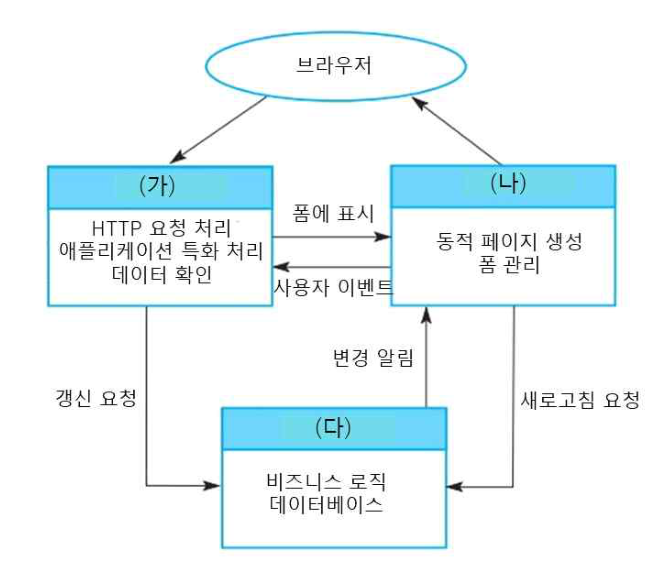
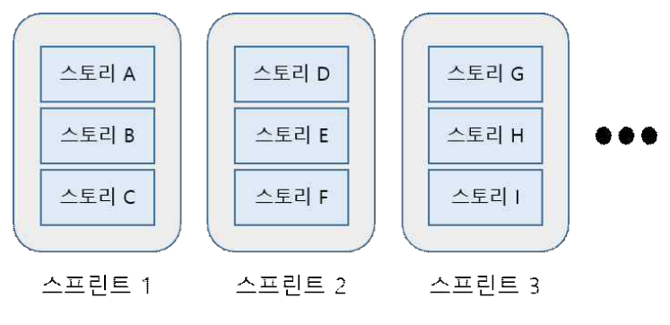
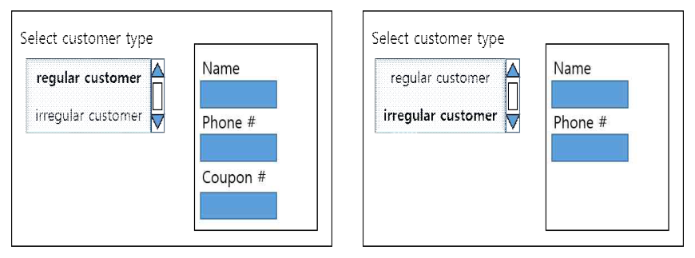
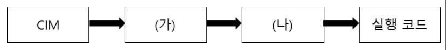

작성 기준: 업로드된 소프트웨어공학 강의자료(Part I~III, [1]1. SW 공학) 우선 근거, 외부지식은 보조적으로만 사용(강의자료 미수록 항목은 각 문항에 명시)
정답 출처: 2020년(제21회) 정보시스템 감리사 필기시험 문제 및 답안.pdf (원본 Bold 표시 정답 - 페이지 렌더 이미지 직접 대조 확인)
정답 신뢰도: 매우 높음 (stroke-text 자동추출 25/25 + 보기 영역 렌더 확대 육안 대조 25/25 일치, 계산·코드 문항은 별도 재검산)
기준 버전 주의: 본 회차는 2020년 시행분이다. ITIL v4(38번)·전자정부 표준프레임워크 v3.9(42번)·ISO/IEC 25010:2011(44번) 등 버전이 명시된 문항은 이후 개정이 있었으므로, 각 문항의 「관련 이론 정리」 말미에 현행(2025년 기준) 변경사항을 병기하였다.
| 번호 | 정답 | 번호 | 정답 | 번호 | 정답 |
|---|---|---|---|---|---|
| 26 | ③ | 36 | ③ | 46 | ① |
| 27 | ④ | 37 | ① | 47 | ② |
| 28 | ④ | 38 | ① | 48 | ② |
| 29 | ② | 39 | ② | 49 | ① |
| 30 | ② | 40 | ④ | 50 | ① |
| 31 | ③ | 41 | ③ | ||
| 32 | ③ | 42 | ② | ||
| 33 | ② | 43 | ① | ||
| 34 | ② | 44 | ① | ||
| 35 | ④ | 45 | ② |
2020년 제21회 소프트웨어공학은 전항정답·복수정답이 하나도 없는 깔끔한 회차였으나, 체감 난이도는 최근 회차 중 높은 편이다. 이유는 직접 계산·추적해야 답이 나오는 문항이 6개(29·32·33·36·39·47·48) 로 몰려 있었기 때문이다.
영역별 배분을 보면 ① 테스트 5문항(29·32·33·34·47) 로 가장 비중이 크고, ② 애자일·개발방법론 4문항(30·31·36·40), ③ 디자인 패턴·아키텍처 5문항(27·28·35·41·45), ④ 요구공학 1문항(26), ⑤ 유지보수·형상·품질 5문항(44·49·50·38·34), ⑥ 표준·라이선스·프레임워크 3문항(37·42·46), ⑦ 코드 추적 1문항(39), ⑧ 비용산정 1문항(48) 순이다. 테스트 + 애자일이 전체의 36% 를 차지한다는 점이 이 회차의 가장 큰 특징이다.
계산·추적 문항의 성격이 서로 다르다는 점에 주의해야 한다. 32번(순환복잡도)은 공식 대입으로 끝나지만, 29번(페어와이즈)은 모든 인자쌍이 한 번씩 나타나는지를 조합으로 검증해야 하고, 33번·47번은 제어 흐름 그래프를 직접 그려야 하며, 36번은 속도(velocity) → 스프린트 수 → 주 → 개월 로 단위를 두 번 환산해야 한다. 39번은 정적 초기화(holder) 시점과 private 생성자 호출 시점을 정확히 알아야 답이 갈린다. 단순 암기로는 방어가 안 되는 구성이다.
강의자료 커버리지는 대체로 양호하나, 번업 차트(30번)·DSDM(31번)·클린 아키텍처(35번)·지속적 통합 도구(40번) 는 업로드된 강의자료에서 직접 다루지 않아 외부지식으로 보완했다. 해당 문항의 「매칭 강의자료」에 미수록 사실을 명시했다.
버전 종속 문항 3개(38·42·44) 는 반드시 개정 내용을 함께 확인할 것. 특히 42번은 문제 자체가 "2020년도 버전(표준프레임워크 v3.9) 기준"이라고 못 박고 있어, 현행 v4.x 기준으로 풀면 틀릴 수 있다.
| 항목 | 내용 |
|---|---|
| 문서명 | 정보시스템 감리사 소프트웨어공학 기출문제 해설집 - 2020년 제21회 |
| 대상 문항 | Q26 ~ Q50 (소프트웨어공학) |
| 원본 출처 | 2020년(제21회) 정보시스템 감리사 필기시험 문제 및 답안.pdf (p.6~11) |
| 정답 확인 방법 | stroke-text(글리프 render mode) 자동추출 + 보기 영역 렌더 확대 육안 대조 (25/25 일치) |
| 특이 문항 | 없음 (전항정답·복수정답 없음) |
| 그림 포함 문항 | 27번 MVC 런타임 아키텍처, 36번 릴리스 계획 도해, 41번 UI 의존관계 화면, 45번 MDA 변환 흐름도 — 모두 이미지 + 서술 전사 병기 |
| 표·코드 제시 문항 | 29·30·33·36·39·44·47·48번 — 이미지 대신 마크다운 표/코드블록으로 전사 |
| 근거 강의자료 | 1. SW공학 Part I(V1.2), 1.2·1.3 Part I(아키텍처), 2.1 Part II(디자인·UML), 2.2 디자인 패턴, 2.3 Part II(SW 개발), 3.1 Part III(테스트·유지관리), 3.2 Part III(품질관리·비용산정), [1]1. SW 공학(V1.1) |
| 강의자료 미수록(외부지식 보완) 항목 | 번업 차트(30번), DSDM(31번), 클린 아키텍처(35번), CI 도구 생태계(40번), 형상감사 세부 유형(50번 일부) |
| 기준 버전 | 2020년 출제 당시 기준 + 현행(2025년) 개정사항 병기 |
요구사항 검증 과정 동안, 요구사항 문서에 작성된 요구사항들에 대해서 다양한 유형의 점검을 수행해야 한다. 다음 중 요구사항 점검 유형과 그 설명이 가장 적절하게 짝지어진 것은?
① 완전성 점검 : 문서상의 요구사항은 서로 상충되지 않아야 한다.
② 일관성 점검 : 요구사항 문서는 시스템 사용자가 의도한 모든 기능과 제약을 정의하는 요구사항을 포함해야 한다.
③ 유효성 점검 : 요구사항이 시스템 사용자의 실제 요구를 반영하는지를 점검한다.
④ 실현성 점검 : 고객과 계약자 사이의 분쟁 가능성을 줄이기 위해, 시스템 요구사항은 문서로 작성해서 구현이 가능한지를 점검해야 한다.
정답 : ③번
정답 신뢰도 : 매우 높음 (원본 Bold 확인)
| 항목 | 내용 |
|---|---|
| 연도 | 2020년 (제21회) |
| 과목 | 소프트웨어공학 |
| 문항번호 | 26번 |
| 난이도 | 중 |
| 출제주제 | 요구공학 - 요구사항 검증(validation)의 점검 유형 |
요구공학은 매 회차 1~2문항이 고정 출제되며, 그중 요구사항 검증/확인 구분과 점검 유형 매칭이 절반을 차지한다. 나머지 절반은 요구사항 추출 기법(인터뷰·브레인스토밍·프로토타이핑)과 기능/비기능 요구사항 분류이다.
| 연도 | 문항번호 | 핵심개념 |
|---|---|---|
| 2022 | 26 | 요구사항 추출·분석 기법 |
| 2024 | 27 | 비기능 요구사항 분류 |
"유(효)-사(용자 실제요구) / 일(관)-충(돌) / 완(전)-누(락) / 실(현)-예산·기술 / 검(증가능)-테스트"
앞 글자와 핵심어를 한 쌍으로 외우면 뒤바꿈 함정을 즉시 걸러낼 수 있다.
Sommerville의 요구공학에서 요구사항 검증은 다섯 가지 점검 유형으로 구성되며, 각 유형의 정의는 서로 뚜렷이 구분된다.
③ 유효성 점검(validity checks) 은 "이 요구사항이 정말 사용자가 원하는 것인가"를 묻는다. 문서가 문법적으로 완벽해도 사용자의 실제 업무 요구와 어긋나면 무의미하다는 문제의식에서 나온 점검이다. 보기 ③의 서술 "요구사항이 시스템 사용자의 실제 요구를 반영하는지를 점검한다"는 유효성 점검의 정의 그 자체이므로 짝이 정확하다.
나머지 보기는 모두 유형명과 설명이 서로 뒤바뀐 전형적인 함정이다.
"서로 상충되지 않아야 한다"는 일관성 점검(consistency) 의 정의다. 완전성은 빠진 것이 없는가, 일관성은 충돌하는 것이 없는가 이다. 두 개념이 서로 자리를 바꿔 제시되었다.
"사용자가 의도한 모든 기능과 제약을 포함해야 한다"는 완전성 점검(completeness) 의 정의다. ①과 ②가 서로의 설명을 맞바꿔 들고 있는 구조이므로, 둘 중 하나만 보고 판단하지 말고 쌍으로 대조해야 빠르게 걸러낼 수 있다.
실현성 점검(realism checks)은 "주어진 예산·기술·일정 안에서 구현 가능한가"를 본다. 반면 보기 ④의 "고객과 계약자 사이의 분쟁 가능성을 줄이기 위해 문서로 작성"은 검증가능성(verifiability) 내지 요구사항 문서화의 목적에 대한 설명이다. "구현이 가능한지"라는 꼬리말 때문에 실현성처럼 보이지만, 문장의 주된 내용이 분쟁 예방을 위한 문서화이므로 정의가 어긋난다.
요구사항 검증의 5가지 점검 유형 (Sommerville)
| 점검 유형 | 영문 | 핵심 질문 |
|---|---|---|
| 유효성 | validity | 사용자가 진짜 원하는 것인가? |
| 일관성 | consistency | 요구사항끼리 충돌하지 않는가? |
| 완전성 | completeness | 빠진 기능·제약은 없는가? |
| 실현성 | realism | 예산·기술·일정 내 구현 가능한가? |
| 검증가능성 | verifiability | 테스트로 확인할 수 있게 기술되었는가? |
검증(validation) vs 확인(verification)
| 구분 | 질문 | 대상 |
|---|---|---|
| Validation(유효성 확인) | "옳은 제품을 만들고 있는가" | 사용자 요구 대비 |
| Verification(검증) | "제품을 옳게 만들고 있는가" | 명세 대비 |
강의자료(Part I, p.135)는 요구사항 검증 활동을 타당성·일치성·완전성·현실성 으로 표기한다. 이는 각각 validity·consistency·completeness·realism의 다른 번역어이므로 같은 개념으로 이해하면 된다. 시험에서는 두 표기가 혼용되므로 영문 원어로 매핑해 두는 것이 안전하다.
요구정의단계 감리에서 요구사항정의서를 점검할 때, 감리원은 위 5가지를 체크리스트로 만들어 사용한다. 특히 완전성은 요구사항 추적표(RTM)의 커버리지로, 검증가능성은 각 요구사항에 인수기준(acceptance criteria)이 붙어 있는지로 확인한다. "성능이 우수해야 한다" 같은 검증 불가능한 표현은 부적합 지적 대상이다.
유형명과 설명을 서로 바꿔 놓는 방식이 이 주제의 고정 출제 패턴이다. 대응법은 간단하다 — 보기를 읽을 때 설명부터 읽고 내 머릿속의 유형명을 붙인 뒤, 문두의 유형명과 대조한다. 특히 완전성 ↔ 일관성 쌍이 가장 자주 뒤바뀐다.
다음은 웹 기반 시스템에서 상호 작용 관리를 위해 MVC 패턴이 사용될 때 런타임 시스템 아키텍처를 그림으로 나타내고 있다. (가) ~ (다)에 가장 적절한 구성요소는?

(그림 서술 전사) 최상단에 브라우저가 있고, 그 아래 세 개의 구성요소가 배치되어 있다.
| 구성요소 | 상자 안 기재 내용 | 브라우저와의 관계 |
|---|---|---|
| (가) | HTTP 요청 처리 / 애플리케이션 특화 처리 / 데이터 확인 | 브라우저 ↔ (가) 양방향 |
| (나) | 동적 페이지 생성 / 폼 관리 | 브라우저 ↔ (나) 양방향 |
| (다) | 비즈니스 로직 / 데이터베이스 | 브라우저와 직접 연결 없음 |
화살표 라벨은 다음과 같다.
- (가) → (나) : 폼에 표시
- (나) → (가) : 사용자 이벤트
- (가) → (다) : 갱신 요청
- (다) → (나) : 변경 알림
- (나) → (다) 방향 : 새로고침 요청
① (가) 뷰, (나) 제어기, (다) 모델
② (가) 모델, (나) 제어기, (다) 뷰
③ (가) 제어기, (나) 모델, (다) 뷰
④ (가) 제어기, (나) 뷰, (다) 모델
정답 : ④번
정답 신뢰도 : 매우 높음 (원본 Bold 확인)
| 항목 | 내용 |
|---|---|
| 연도 | 2020년 (제21회) |
| 과목 | 소프트웨어공학 |
| 문항번호 | 27번 |
| 난이도 | 중 |
| 출제주제 | 아키텍처 패턴 - 웹 기반 MVC의 런타임 구성요소 식별 |
아키텍처 패턴은 매 회차 1~2문항 출제되며 MVC·계층형·클라이언트-서버·파이프필터·저장소(Repository) 패턴이 순환한다. MVC는 그중 최빈출로, 그림 빈칸 채우기와 패턴 선택(MVC vs MVP vs MVVM) 두 가지 형태로 나온다.
| 연도 | 문항번호 | 핵심개념 |
|---|---|---|
| 2021 | 26 | SOLID - OCP |
| 2023 | 28 | 아키텍처 패턴 선택 |
| 2025 | 27 | 계층형 아키텍처 |
"요청은 컨트롤러, 화면은 뷰, 데이터는 모델. 알림은 모델→뷰."
상자에HTTP가 있으면 무조건 Controller,DB가 있으면 무조건 Model.
그림의 세 상자에 적힌 책임(responsibility) 만 보면 답이 바로 나온다.
(가) = 제어기(Controller)
"HTTP 요청 처리"가 결정적이다. 웹 MVC에서 브라우저가 보낸 HTTP 요청을 가장 먼저 받아 어떤 처리를 할지 결정하는 것은 컨트롤러다. "애플리케이션 특화 처리", "데이터 확인(입력값 검증)" 역시 컨트롤러의 전형적 역할이다.
(나) = 뷰(View)
"동적 페이지 생성", "폼 관리"는 화면을 만들어 내는 일이므로 뷰다. (가)에서 (나)로 가는 화살표가 "폼에 표시", (나)에서 (가)로 오는 화살표가 "사용자 이벤트" 인 것도 컨트롤러↔뷰 관계와 일치한다.
(다) = 모델(Model)
"비즈니스 로직", "데이터베이스"는 모델의 정의 그대로다. (다) → (나) "변경 알림" 화살표가 결정적 단서인데, MVC에서 모델의 상태가 바뀌면 뷰에게 알려 화면을 갱신시키는 change notification 이 바로 이것이다.
따라서 (가) 제어기 - (나) 뷰 - (다) 모델 = ④번.
(가)가 뷰라면 "HTTP 요청 처리"를 뷰가 맡는 셈이 된다. 뷰는 요청을 받는 주체가 아니라 응답을 만들어 내는 주체이므로 성립하지 않는다.
(가)에 "데이터베이스"가 없고 "HTTP 요청 처리"가 있으므로 모델일 수 없다. 또 이 경우 (다)가 뷰가 되는데, (다)에는 "비즈니스 로직·데이터베이스"가 적혀 있어 명백히 모순이다.
(나)의 "동적 페이지 생성"은 뷰의 일이고, (다)의 "데이터베이스"는 모델의 일이다. (나)와 (다)가 서로 자리가 바뀐 보기다. 이 보기를 거르는 가장 빠른 방법은 "데이터베이스가 적힌 상자 = 모델"이라는 한 가지 규칙이다.
MVC 구성요소별 책임
| 구성요소 | 책임 | 웹 구현 예 |
|---|---|---|
| Model | 비즈니스 로직, 데이터·상태 관리, 상태 변경 시 알림 | Service, DAO, Entity |
| View | 모델 상태의 시각적 표현, 폼 렌더링 | JSP, Thymeleaf, React 컴포넌트 |
| Controller | 사용자 입력·HTTP 요청 수신, 모델 갱신 지시, 뷰 선택 | Servlet, @Controller |
MVC 상호작용 흐름
브라우저 --(HTTP 요청)--> Controller --(갱신 요청)--> Model
| |
(뷰 선택) (변경 알림)
v v
View <---------------------+
|
+--(HTML 응답)--> 브라우저
MVC 변형 패턴 비교
| 패턴 | 특징 | View-Model 관계 |
|---|---|---|
| MVC | Controller가 흐름 제어 | View가 Model을 직접 참조(또는 알림 수신) |
| MVP | Presenter가 View를 직접 갱신 | View ↔ Presenter만, Model과 분리 |
| MVVM | ViewModel + 데이터 바인딩 | 양방향 바인딩으로 자동 동기화 |
설계단계 감리에서 계층 구조 위반(layer violation)을 점검할 때 이 그림이 기준이 된다. 대표적 지적 사항은 뷰(JSP)에서 DAO를 직접 호출하거나, 컨트롤러에 비즈니스 로직이 누적되어 Fat Controller가 되는 경우다. 전자정부 표준프레임워크도 Controller-Service-DAO 3계층을 강제하여 이 문제를 예방한다.
그림형 MVC 문제는 상자 안의 키워드 한 개로 갈린다. HTTP 요청 → Controller, 동적 페이지·폼 → View, 비즈니스 로직·DB → Model. 화살표 라벨 중 "변경 알림(change notification)"은 항상 Model → View 방향이라는 것도 함께 외워 두면 그림이 회전되어 나와도 흔들리지 않는다.
다음 설명에 가장 적절한 디자인 패턴은?
이 패턴의 특징은 '기능의 클래스 계층'과 '구현의 클래스 계층'을 분리하는 것이다. 이 두 개의 클래스 계층을 분리해 두면 각각의 클래스 계층을 독립적으로 확장할 수 있다. 기능을 추가하고 싶으면 기능의 클래스 계층에 클래스를 추가한다. 이때 구현의 클래스 계층은 전혀 수정할 필요가 없다.
① memento 패턴
② flyweight 패턴
③ adapter 패턴
④ bridge 패턴
정답 : ④번
정답 신뢰도 : 매우 높음 (원본 Bold 확인)
| 항목 | 내용 |
|---|---|
| 연도 | 2020년 (제21회) |
| 과목 | 소프트웨어공학 |
| 문항번호 | 28번 |
| 난이도 | 중 |
| 출제주제 | GoF 디자인 패턴 - Bridge 패턴 |
디자인 패턴은 매 회차 2~3문항이 나오는 최대 빈출 주제다. 출제 형태는 ① 지문 → 패턴명 고르기(본 문항), ② 코드/UML → 패턴명 고르기, ③ 상황 → 적용할 패턴 고르기(41번 유형) 세 가지다.
| 연도 | 문항번호 | 핵심개념 |
|---|---|---|
| 2020 | 41 | Mediator 패턴 적용 |
| 2022 | 30 | GoF 패턴 분류 |
| 2024 | 31 | Decorator vs Proxy |
"기능 ↔ 구현, 두 계층을 다리(Bridge)로 잇는다. 상속 m×n → 합성 m+n."
문제 지문의 "기능의 클래스 계층"과 "구현의 클래스 계층" 은 Bridge 패턴 설명에서 쓰이는 표준 용어로, GoF 원문의 Abstraction 계층과 Implementor 계층에 각각 대응한다.
Bridge의 핵심은 이 둘을 상속이 아니라 합성으로 잇는 것이다. 만약 상속으로 조합하면 기능 m개 × 구현 n개 = m×n개 클래스가 필요하지만(클래스 폭발), Bridge를 쓰면 m+n개로 줄고 어느 한쪽을 늘려도 다른 쪽을 건드리지 않는다. 지문의 마지막 문장 "기능을 추가하고 싶으면 기능의 클래스 계층에 클래스를 추가한다. 이때 구현의 클래스 계층은 전혀 수정할 필요가 없다" 가 바로 이 독립적 확장성을 서술한 것이다.
[기능 계층] [구현 계층]
Abstraction ◇---------> Implementor (합성 = 다리/Bridge)
^ ^
| |
RefinedAbstraction ConcreteImplementorA/B
행위 패턴. 객체의 내부 상태를 캡슐화를 깨지 않고 외부에 저장했다가 복원하는 패턴(Undo 기능). 계층 분리와 무관하다.
구조 패턴. 다수의 유사 객체가 공유 가능한 내재적 상태(intrinsic state) 를 공유해 메모리를 절약하는 패턴. "분리"라는 단어가 등장하지만 분리 대상이 상태(내재/외재) 이지 클래스 계층이 아니다.
구조 패턴. 호환되지 않는 인터페이스를 변환해 기존 클래스를 재사용하게 한다. Bridge와 자주 혼동되는데, 결정적 차이는 설계 시점이다.
| 구분 | Adapter | Bridge |
|---|---|---|
| 적용 시점 | 사후(이미 만들어진 것을 붙임) | 사전(설계 단계에서 미리 분리) |
| 목적 | 인터페이스 변환 | 추상-구현 분리 및 독립 확장 |
GoF 23개 패턴 분류
| 분류 | 패턴 |
|---|---|
| 생성(5) | Abstract Factory, Builder, Factory Method, Prototype, Singleton |
| 구조(7) | Adapter, Bridge, Composite, Decorator, Facade, Flyweight, Proxy |
| 행위(11) | Chain of Responsibility, Command, Interpreter, Iterator, Mediator, Memento, Observer, State, Strategy, Template Method, Visitor |
Bridge와 헷갈리기 쉬운 패턴 구별 키워드
| 패턴 | 한 문장 식별자 |
|---|---|
| Bridge | "기능 계층 / 구현 계층을 독립 확장" |
| Strategy | "알고리즘을 런타임에 교체" |
| Adapter | "인터페이스 변환, 기존 클래스 재사용" |
| Decorator | "기능을 동적으로 덧씌움(중첩 가능)" |
| Proxy | "대리 객체로 접근 제어·지연 로딩" |
Bridge와 Strategy는 구조(합성으로 위임)가 거의 같아 UML만으로는 구분이 어렵다. 의도로 갈라야 한다 — Bridge는 구조를 분리, Strategy는 알고리즘을 교체.
JDBC가 대표적인 Bridge 구현이다. java.sql.Connection(기능/추상 계층)과 각 벤더의 드라이버(구현 계층)가 분리되어 있어, DBMS를 바꿔도 애플리케이션 코드는 그대로다. 설계 감리에서 "DBMS 종속 코드가 업무 로직에 직접 노출되었는지"를 점검하는 근거가 이 패턴이다.
디자인 패턴 문항은 지문 속 고정 표현 한 개로 판별한다. "기능의 클래스 계층 / 구현의 클래스 계층" 이 표현이 나오면 무조건 Bridge다. 마찬가지로 "상태를 저장했다 복원"=Memento, "공유로 메모리 절약"=Flyweight, "인터페이스 변환"=Adapter로 1:1 대응시켜 두면 된다.
다음 표는 3개의 입력 인자가 가질 수 있는 값을 나타내고 있다.
| 입력 인자 | A | B | C |
|---|---|---|---|
| 값(또는 클래스) | A1 | B1 | C1 |
| A2 | B2 | C2 |
이 때 페어와이즈 테스트(pairwise test) 조합으로 생성된 테스트 케이스는 다음 표와 같다. (가) ~ (라)에 가장 적절한 값은?
| 테스트 케이스 \ 입력 인자 | A | B | C |
|---|---|---|---|
| 1 | A2 | B2 | (가) |
| 2 | A2 | B1 | (나) |
| 3 | A1 | B2 | (다) |
| 4 | A1 | B1 | (라) |
① (가) C1, (나) C1, (다) C2, (라) C2
② (가) C1, (나) C2, (다) C2, (라) C1
③ (가) C1, (나) C1, (다) C1, (라) C1
④ (가) C2, (나) C2, (다) C2, (라) C2
정답 : ②번
정답 신뢰도 : 매우 높음 (원본 Bold 확인 + 조합 전수 검산)
| 항목 | 내용 |
|---|---|
| 연도 | 2020년 (제21회) |
| 과목 | 소프트웨어공학 |
| 문항번호 | 29번 |
| 난이도 | 상 |
| 출제주제 | 테스트 설계 기법 - 페어와이즈(pairwise) 조합 테스트 |
테스트 설계 기법은 매 회차 2~3문항이 출제되며, 동등분할·경계값 분석·결정 테이블·페어와이즈·상태전이가 순환한다. 페어와이즈는 표 빈칸 채우기 형태로 고정 출제된다.
| 연도 | 문항번호 | 핵심개념 |
|---|---|---|
| 2020 | 33 | 경로 커버리지 탐침 |
| 2020 | 47 | 경로 커버리지 미테스트 경로 |
| 2023 | 35 | 경계값 분석 |
"페어와이즈 = 두 개씩 짝지어 빠짐없이. 2인자 2수준 3개면 답은 4줄."
보기 중 한 값만 반복되는 것은 즉시 탈락.
페어와이즈의 요건은 하나다 — 어떤 두 인자를 뽑아도, 그 두 인자 값의 모든 조합(2×2=4가지)이 최소 한 번씩 나타나야 한다. 인자 쌍은 (A,B), (A,C), (B,C) 세 가지이므로 세 쌍 모두를 검사한다.
① (A,B) 쌍 — 표에 이미 확정되어 있다.
| TC | A | B |
|---|---|---|
| 1 | A2 | B2 |
| 2 | A2 | B1 |
| 3 | A1 | B2 |
| 4 | A1 | B1 |
A2B2, A2B1, A1B2, A1B1 → 4가지 모두 등장 ✓ (미지수와 무관하게 충족)
② (A,C) 쌍 — A2인 TC는 1(가)·2(나), A1인 TC는 3(다)·4(라).
- A2와 C1, A2와 C2가 모두 나오려면 → (가) ≠ (나)
- A1과 C1, A1과 C2가 모두 나오려면 → (다) ≠ (라)
③ (B,C) 쌍 — B2인 TC는 1(가)·3(다), B1인 TC는 2(나)·4(라).
- (가) ≠ (다)
- (나) ≠ (라)
네 조건을 모두 만족하는 배치를 찾으면 된다.
보기 ②: (가)=C1, (나)=C2, (다)=C2, (라)=C1
| 조건 | 검증 |
|---|---|
| (가)≠(나) | C1 ≠ C2 ✓ |
| (다)≠(라) | C2 ≠ C1 ✓ |
| (가)≠(다) | C1 ≠ C2 ✓ |
| (나)≠(라) | C2 ≠ C1 ✓ |
4개 조건 전부 충족 → 정답 ②
실제로 ②를 대입한 테스트 케이스는 (A2,B2,C1), (A2,B1,C2), (A1,B2,C2), (A1,B1,C1)이며, 세 쌍의 조합을 전수 확인하면 다음과 같이 빠짐이 없다.
| 쌍 | 등장 조합 |
|---|---|
| (A,C) | A2C1(TC1), A2C2(TC2), A1C2(TC3), A1C1(TC4) → 4/4 ✓ |
| (B,C) | B2C1(TC1), B1C2(TC2), B2C2(TC3), B1C1(TC4) → 4/4 ✓ |
(가)=(나)=C1 이므로 A2와 C2의 조합이 어디에도 없다. (A,C) 쌍 커버리지 실패.
C2가 단 한 번도 등장하지 않는다. (A,C)·(B,C) 쌍 모두 실패이며, C 인자의 값 하나를 아예 테스트하지 않으므로 1-way(each choice) 커버리지조차 만족하지 못한다.
③과 대칭으로 C1이 등장하지 않는다. 동일한 이유로 실패.
빠른 소거법: 보기 ③·④는 C값이 한 종류뿐이라 즉시 탈락. 남은 ①·②에서 "(가)와 (나)가 다른가"만 보면 ②만 남는다. 10초 컷이 가능하다.
조합 테스트 기법 비교
| 기법 | 커버리지 요건 | 3인자 2수준 예시 |
|---|---|---|
| Each Choice (1-way) | 각 인자의 각 값이 1회 이상 | 2개 |
| Pairwise (2-way) | 모든 인자쌍의 모든 값 조합 1회 이상 | 4개 |
| Base Choice | 기준값 고정 후 한 인자씩 변화 | 4개 |
| All Combinations (전수) | 모든 조합 | 2³ = 8개 |
페어와이즈를 쓰는 이유
- 실증 연구상 결함의 70~90%가 1개 또는 2개 인자의 상호작용에서 발생한다.
- 인자·수준이 늘수록 전수 조합은 지수적으로 폭발하지만(예: 10인자 3수준 = 59,049), 페어와이즈는 수십 개 수준으로 억제된다.
- 직교배열(orthogonal array) 이나 IPO 알고리즘(도구: PICT, ACTS)으로 자동 생성한다.
한계
- 3개 이상 인자가 동시에 얽혀 발생하는 결함(3-way 이상)은 검출하지 못한다. 안전필수(safety-critical) 시스템에서는 t-way(t≥3)로 강도를 올린다.
브라우저(4종) × OS(3종) × 해상도(3종) × 언어(2종) 호환성 테스트는 전수 72건이지만, 페어와이즈로 생성하면 12건 내외로 줄어든다. 테스트 감리에서 "조합 테스트 설계 근거가 문서화되어 있는가", "축소 기법 적용 시 커버리지 기준(2-way)을 명시했는가" 를 점검한다.
페어와이즈 문항은 "모든 인자쌍의 모든 값 조합" 이라는 정의 한 줄만 정확히 알면 소거법으로 풀린다. 계산이 아니라 검증 문제라는 점이 중요하다 — 보기를 대입해 조건 위반을 찾는 방식이 가장 빠르다.
애자일 프로젝트에서 다음과 같이 시간의 경과에 따라 완료된 작업량을 그래프로 표시하기 위해 가장 적절한 것은?
| 스프린트 | 1차 | 2차 | 3차 | 4차 | 5차 | 6차 |
|---|---|---|---|---|---|---|
| 완료 스토리포인트 | 25 | 40 | 30 | 25 | 40 | 45 |
| 누적 스토리포인트 | 25 | 65 | 95 | 120 | ... | ... |
| 전체 스토리포인트 | 300 | 300 | 300 | 320 | ... | ... |
원본 표는 완료/누적/전체 세 행으로 구성되며, 전체 스토리포인트가 4차에서 300 → 320으로 증가한 점(범위 변경)이 핵심 단서다.
① 번다운 차트
② 번업 차트
③ PERT/CPM 차트
④ 백로그 진척률 차트
정답 : ②번
정답 신뢰도 : 매우 높음 (원본 Bold 확인)
| 항목 | 내용 |
|---|---|
| 연도 | 2020년 (제21회) |
| 과목 | 소프트웨어공학 |
| 문항번호 | 30번 |
| 난이도 | 하 |
| 출제주제 | 애자일 진척 시각화 - 번업(burn-up) 차트 |
애자일은 최근 회차마다 3~4문항으로 비중이 커졌다. 스크럼 역할·이벤트·산출물, 진척 시각화(번업/번다운), 속도 기반 일정 산정(36번), 애자일 방법론 종류(31번)가 주요 논점이다.
| 연도 | 문항번호 | 핵심개념 |
|---|---|---|
| 2020 | 36 | 속도 기반 릴리스 일정 산정 |
| 2022 | 33 | 스크럼 이벤트 |
| 2024 | 29 | 애자일 산출물 |
"번업은 쌓고(UP, 완료 누적), 번다운은 깎는다(DOWN, 잔여). 범위선이 보이면 번업."
문제의 요구는 "시간의 경과에 따라 완료된 작업량을 그래프로 표시" 이다. 이 문장이 그대로 번업 차트(burn-up chart) 의 정의다.
번업 차트는 두 개의 선을 그린다.
1. 완료선 : 누적 완료 스토리포인트 (25 → 65 → 95 → 120 → …) — 우상향
2. 범위선 : 전체 스토리포인트 (300 → 300 → 300 → 320 → …) — 보통 수평이나 범위가 바뀌면 계단식으로 이동
제시 표에 누적과 전체가 나란히 주어졌고, 특히 4차 스프린트에서 전체가 300에서 320으로 늘어난 것이 결정적이다. 이렇게 범위 변경(scope creep)이 발생한 상황을 시각적으로 드러낼 수 있는 것은 번업 차트뿐이다.
번다운은 남은 작업량을 y축에 그려 0을 향해 내려가는 차트다. 문제가 요구한 "완료된 작업량"과 방향이 반대다.
더 결정적인 약점은 범위 변경을 구분할 수 없다는 것이다. 번다운에서 선이 위로 꺾이면 그것이 일을 못 해서인지 범위가 늘어서인지 알 수 없다. 반면 번업은 완료선과 범위선이 분리되어 있어 원인이 즉시 보인다. 4차에서 전체가 320으로 늘어난 이 문제 상황에서는 번다운이 부적절하다.
전통적 일정관리 기법으로, 활동 간 선후관계와 임계경로를 표현한다. 시간 경과에 따른 누적 완료량 표현 도구가 아니며 애자일 진척 관리 도구도 아니다.
표준 애자일 용어가 아니다. 유사한 것으로 누적 흐름도(CFD, Cumulative Flow Diagram)가 있으나 이는 작업 상태별(To Do/Doing/Done) 항목 수를 면적으로 보는 칸반 도구로, 문제의 표 구조와 맞지 않는다.
번업 vs 번다운
| 구분 | 번업(burn-up) | 번다운(burn-down) |
|---|---|---|
| y축 | 완료 누적량 | 잔여 작업량 |
| 방향 | 우상향 ↗ | 우하향 ↘ |
| 범위선 | 별도 표시 O | 없음 |
| 범위 변경 식별 | 가능 | 어려움 |
| 완료 시점 | 두 선이 만나는 지점 | 0에 닿는 지점 |
| 주 사용처 | 릴리스·프로젝트 수준 | 스프린트 수준 |
애자일 진척 시각화 도구 정리
| 도구 | 보는 것 |
|---|---|
| 번다운 차트 | 스프린트 내 잔여량 |
| 번업 차트 | 누적 완료량 + 전체 범위 |
| 누적 흐름도(CFD) | 상태별 재공품(WIP)·리드타임 |
| 속도(velocity) 차트 | 스프린트별 완료 포인트 추이 |
| 칸반 보드 | 현재 작업 흐름 |
강의자료 수록 여부: Part I 강의자료는 스크럼의 3산출물로 burn down chart 를, 스크럼/칸반 비교표에서 "burn down chart와 velocity 측정" 을 다룬다. 번업 차트는 업로드된 강의자료에 직접 수록되어 있지 않아 외부지식으로 보완했다.
릴리스 계획 보고에서 고객에게 진척을 설명할 때는 번업이 선호된다. "요구가 늘어서 일정이 밀렸다"는 사실을 범위선의 계단 상승으로 객관적으로 보여줄 수 있기 때문이다. 사업관리 감리에서도 범위 변경 이력과 번업 차트의 범위선 변화가 일치하는지 대조 점검한다.
"완료된 작업량" → 번업 / "남은 작업량" → 번다운 이 한 줄이 전부다. 여기에 "범위 변경을 보여줄 수 있는 차트" 도 번업이라는 점을 덧붙여 두면 변형 출제도 방어된다.
다음 설명에 해당하는 것으로 가장 적절한 것은?
- 통제된 프로젝트 환경에서 점증적 프로토타이핑을 통해 빠듯한 시간 제약조건 내에 시스템을 개발하고 유지보수하기 위한 프레임워크를 제공하는 애자일 소프트웨어 개발 방식이다.
- 각각의 반복 단계가 파레토 법칙(80% 규칙) 을 따르는 반복적인 소프트웨어 프로세스이다.
- 생명주기는 기본적인 비즈니스 요구사항과 제약조건을 설정하는 타당성 조사로부터 시작해서, 기능성 그리고 정보 요구사항을 도출하는 비즈니스 연구를 수행한다. 이후 기능적 모델 반복, 설계와 구축 반복, 시행이라는 세 가지 다른 반복주기가 정의된다.
① 스크럼(scrum)
② 애자일 모델링(agile modeling)
③ 동적 시스템 개발 방법(DSDM)
④ 애자일 통합 프로세스(AUP)
정답 : ③번
정답 신뢰도 : 매우 높음 (원본 Bold 확인)
| 항목 | 내용 |
|---|---|
| 연도 | 2020년 (제21회) |
| 과목 | 소프트웨어공학 |
| 문항번호 | 31번 |
| 난이도 | 중 |
| 출제주제 | 애자일 방법론 - DSDM(동적 시스템 개발 방법) |
애자일 방법론 종류는 3~4년 주기로 "설명 → 방법론명" 형태로 출제된다. 스크럼·XP는 상세 논점(이벤트·실천법)으로, DSDM·FDD·Crystal은 식별 문제로 나오는 것이 전형적이다.
| 연도 | 문항번호 | 핵심개념 |
|---|---|---|
| 2020 | 30 | 번업 차트 |
| 2020 | 36 | 스크럼 속도 기반 일정 |
| 2023 | 30 | XP 실천법 |
"80% 규칙(파레토) + 타임박스 + MoSCoW = DSDM."
생명주기: 타당성 조사 → 비즈니스 연구 → 기능적 모델 반복 → 설계·구축 반복 → 시행
지문에는 DSDM만의 고유 표지가 세 개 들어 있다.
① "파레토 법칙(80% 규칙)"
DSDM의 대표 원칙이다. "어떤 시스템이든 80%는 전체 시간의 20%로 만들 수 있다" 는 전제 아래, 완벽한 100%가 아니라 유용한 80%를 먼저 인도하고 나머지를 이후 반복에서 채운다. 다른 애자일 방법론은 이 표현을 쓰지 않는다.
② "타당성 조사 → 비즈니스 연구"로 시작하는 생명주기
DSDM은 애자일 중에서도 선행 단계(pre-project/feasibility) 를 명시적으로 두는 드문 방법론이다. 스크럼·XP에는 이런 단계명이 없다.
③ "기능적 모델 반복 / 설계와 구축 반복 / 시행" 세 반복주기
DSDM 고전 생명주기(Functional Model Iteration / Design and Build Iteration / Implementation)의 정확한 명칭이다.
여기에 "통제된 프로젝트 환경", "빠듯한 시간 제약조건"이라는 표현이 더해지는데, 이는 DSDM이 타임박스를 고정하고 범위를 조정하는 방식(시간·자원 고정, 기능 가변)을 취하기 때문이다.
가장 널리 쓰이는 애자일 프레임워크이지만, 생명주기가 스프린트 반복 하나로 단순하다. 3역할(PO/SM/개발팀)·5이벤트·3산출물로 구성되며, "타당성 조사", "비즈니스 연구", "파레토 법칙" 같은 용어를 쓰지 않는다.
Scott Ambler가 제시한 모델링·문서화 실천법의 집합이다. "목적을 가진 모델링", "다중 모델 사용", "충분히 좋은 문서" 같은 원칙을 제공할 뿐, 완결된 생명주기를 정의하지 않는다. 지문처럼 단계별 반복주기를 갖는 프로세스가 아니다.
RUP를 경량화한 방법론으로, 도입(Inception) → 정련(Elaboration) → 구축(Construction) → 전이(Transition) 4단계를 따른다. 단계명이 지문과 전혀 다르다. 또 AUP는 파레토 법칙이 아니라 RUP의 반복·점증(iterative & incremental) 을 계승한다.
주요 애자일 방법론 비교
| 방법론 | 핵심 특징 | 고유 키워드 |
|---|---|---|
| 스크럼 | 스프린트 반복, 자기조직화 팀 | 3역할·5이벤트·3산출물, 번다운 |
| XP | 기술 실천법 중심 | 페어 프로그래밍, TDD, 리팩터링, 지속적 통합 |
| DSDM | 타임박스 + 파레토(80%) | MoSCoW, 타당성 조사, 기능적 모델 반복 |
| FDD | 기능(feature) 단위 개발 | 전체 모델 개발, 기능 목록 작성 |
| Crystal | 팀 규모·중요도별 등급 | Clear/Yellow/Orange/Red |
| AUP | RUP 경량화 | 도입-정련-구축-전이 |
| Lean | 낭비 제거 | JIT, 가치흐름, 풀 시스템 |
DSDM 8원칙(DSDM Atern)
1. 비즈니스 요구에 집중 2. 정시 인도 3. 협업 4. 품질 타협 금지 5. 견고한 기반 위 점증적 구축 6. 반복 개발 7. 지속적·명확한 소통 8. 통제의 시연
MoSCoW 우선순위
| 등급 | 의미 | 배분 지침 |
|---|---|---|
| Must have | 반드시 | 전체 노력의 60% 이내 |
| Should have | 있어야 | 20% |
| Could have | 있으면 좋음 | 20% |
| Won't have this time | 이번엔 제외 | - |
강의자료 수록 여부: 업로드된 강의자료는 스크럼·XP·칸반·린(Lean)·TDD를 다루나 DSDM은 직접 수록되어 있지 않다. 외부지식으로 보완했다.
공공사업에서 예산·기한이 법적으로 고정된 경우 DSDM식 접근(시간·비용 고정, 범위 조정)이 현실적이다. 다만 계약상 과업내용이 확정되어 있으면 범위 조정이 과업변경 절차를 거쳐야 하므로, 감리에서는 "우선순위(MoSCoW) 합의가 과업변경심의와 연계되어 있는가" 를 점검한다.
애자일 방법론 식별 문제는 고유 명사 한 개로 갈린다. "파레토 80% 규칙" → DSDM, "페어 프로그래밍·TDD" → XP, "스프린트·번다운" → 스크럼, "도입-정련-구축-전이" → AUP/RUP. 지문을 다 읽지 말고 고유 키워드부터 스캔하는 것이 시간 절약에 유리하다.
다음 코드에 대한 순환복잡도(cyclomatic complexity)로 가장 적절한 것은? (단, 코드 실행상의 문제가 없다고 가정함)
void Scoreboard::drawscore(int n) {
if (n > 0) {
score[numdigits]->erase();
}
numdigits = 0;
if (n == 0) {
delete score[numdigits];
score[numdigits] = new Displayable(digits[0]);
score[numdigits]->move(Point((700-numdigits*18),40));
score[numdigits]->draw();
numdigits++;
}
while (n) {
int rem = n % 10;
delete score[numdigits];
score[numdigits] = new Displayable(digits[rem]);
score[numdigits]->move(Point((700-numdigits*18),40));
score[numdigits]->draw();
n /= 10;
numdigits++;
}
}
① 2
② 3
③ 4
④ 5
정답 : ③번
정답 신뢰도 : 매우 높음 (원본 Bold 확인 + 재검산)
| 항목 | 내용 |
|---|---|
| 연도 | 2020년 (제21회) |
| 과목 | 소프트웨어공학 |
| 문항번호 | 32번 |
| 난이도 | 중 |
| 출제주제 | 화이트박스 테스트 - McCabe 순환복잡도 계산 |
순환복잡도는 2년에 1회 이상 꾸준히 출제되는 계산 문항이다. 형태는 ① 코드 제시(본 문항), ② 제어 흐름 그래프 제시, ③ UML 시퀀스 다이어그램 제시(강의자료 p.74 유형) 세 가지이며, 계산 방법은 모두 동일하다.
| 연도 | 문항번호 | 핵심개념 |
|---|---|---|
| 2020 | 33 | 경로 커버리지 탐침 |
| 2020 | 47 | 경로 커버리지 |
| 2022 | 36 | 순환복잡도(그래프) |
"V(G) = 분기 + 1 = E - N + 2 = 영역 수"
셀 것:if,while,for,case,&&,||,?:—&&는 1개 추가
가장 빠른 계산법은 결정점(분기) 개수 + 1 이다.
코드에서 분기를 만드는 문장을 찾는다.
| 순번 | 분기문 | 조건 개수 |
|---|---|---|
| 1 | if (n > 0) |
1 |
| 2 | if (n == 0) |
1 |
| 3 | while (n) |
1 |
| 합계 | 3 |
V(G) = 3 + 1 = 4 → 정답 ③
검산 (E - N + 2)
제어 흐름 그래프를 그리면 노드 8개, 간선 10개가 되어 V(G) = 10 - 8 + 2 = 4로 동일하다.
[시작]
|
(n>0)? ---no---+
|yes |
[erase] |
+------------+
|
[numdigits=0]
|
(n==0)? ---no---+
|yes |
[블록B] |
+------------+
|
(n)? <----+ (while 조건)
|yes |
[블록C]------+
|no
[종료]
주의할 함정 두 가지
delete·new·메서드 호출은 분기가 아니다. 코드 줄 수가 많아 복잡해 보이지만 순차문일 뿐이다.while은 반복이지만 결정점 1개로 센다. 루프 back edge는 그래프에서 간선 하나를 추가하고 동시에 노드 계산에도 반영되므로 결과적으로 +1이다.결정점을 1개만 센 경우다. if 두 개와 while 하나를 모두 세지 않으면 나올 수 없는 값이다.
결정점 수(3)를 그대로 답한 경우로, +1을 빠뜨린 가장 흔한 실수다. V(G)는 "영역(region)의 수"이므로 그래프 바깥 영역 1개를 반드시 더해야 한다.
분기를 4개로 센 경우다. while (n) 안의 n % 10, n /= 10을 분기로 오인하거나, if 두 개를 각각 참/거짓 2개로 중복 계산하면 이 값이 나온다.
순환복잡도 계산 3가지 방법 (결과는 동일)
| 방법 | 공식 | 비고 |
|---|---|---|
| 결정점 기반 | V(G) = P + 1 | P = 분기 조건 수 (가장 빠름) |
| 그래프 기반 | V(G) = E - N + 2 | E=간선, N=노드 |
| 영역 기반 | V(G) = 영역(region) 수 | 평면 그래프의 닫힌 영역 + 외부 영역 1 |
복합 조건의 처리
if (a && b) 는 조건이 2개이므로 P를 2 증가시킨다(단축평가로 분기가 두 번 발생). 본 문항에는 복합 조건이 없어 단순 계산으로 끝나지만, 47번 문항의 if (x > 0 && y == 10) 처럼 나오면 주의해야 한다.
switch-case
case 레이블 개수만큼 P가 증가한다(default 제외).
V(G)의 해석 기준
| V(G) | 위험도 | 권고 |
|---|---|---|
| 1~10 | 낮음 | 양호 |
| 11~20 | 보통 | 검토 필요 |
| 21~50 | 높음 | 모듈 분할 권고 |
| 50 초과 | 매우 높음 | 테스트 불가 수준, 재설계 |
V(G)의 두 가지 의미
1. 독립 경로의 최대 개수 → 기본 경로 테스트(basis path testing)에 필요한 최소 테스트 케이스 수
2. 모듈의 구조적 복잡도 지표 → 유지보수성 예측에 사용
정적 분석 도구(SonarQube, PMD)가 자동 산출하는 대표 지표다. 공공 SW 사업에서는 품질 목표로 "메서드당 순환복잡도 10 이하" 를 설정하는 경우가 많고, 종료단계 감리에서 이 기준 초과 모듈의 목록과 조치 계획을 확인한다.
"분기문 개수 세고 +1" 이 전부다. 코드가 길어도 겁먹지 말고 if, while, for, case, &&, ||, 삼항연산자 ?: 만 세면 된다. +1을 잊는 것이 가장 잦은 실점 원인이다.
다음과 같은 소스 코드가 주어졌다. 이 코드를 경로(path) 커버리지를 100% 만족하도록 테스트하고자 한다. 이때 경로 커버리지를 측정하고자 코드의 실행 경로 상의 특정 지점에 탐침(probe)을 삽입하려 한다. 각 경로의 실행 여부를 판단하기 위해 필요한 최소 탐침 개수로 가장 적절한 것은?
01 int main(void) {
02 int x, y, z;
03 scanf("%d %d", &x, &y);
04 if (x < 0) {
05 if (y < 0) {
06 z = x - y;
07 } else {
08 z = x + y;
09 }
10 z = 5 * z;
11 } else {
12 z = 2 * x * -y;
13 }
14 if (z >= 0) {
15 printf("%d is positive\n", z);
16 } else {
17 printf("%d is negative\n", z);
18 }
19 return 1;
20 }
① 4
② 5
③ 6
④ 8
정답 : ②번
정답 신뢰도 : 매우 높음 (원본 Bold 확인 + 블록 전수 검산)
| 항목 | 내용 |
|---|---|
| 연도 | 2020년 (제21회) |
| 과목 | 소프트웨어공학 |
| 문항번호 | 33번 |
| 난이도 | 상 |
| 출제주제 | 화이트박스 테스트 - 경로 커버리지 측정을 위한 탐침(probe) 수 |
경로 커버리지는 2020년 회차에만 33번·47번 두 문항이 나올 정도로 이 회차의 핵심 논점이었다. 최근에는 MC/DC와 결합해 "커버리지 강도 비교" 형태로도 출제된다.
| 연도 | 문항번호 | 핵심개념 |
|---|---|---|
| 2020 | 32 | 순환복잡도 |
| 2020 | 47 | 미테스트 경로 식별 |
| 2024 | 38 | MC/DC 커버리지 |
"경로는 곱(3×2=6), 탐침은 합(3+2=5)."
공통으로 지나는 블록에는 탐침을 넣지 않는다.
1단계 — 코드의 분기 구조를 파악한다.
코드는 서로 독립적인 두 개의 분기 구간으로 나뉜다.
[구간 1] 4~13행 — 중첩 if, 결과는 3갈래
| 경로 | 조건 | 실행 블록 |
|---|---|---|
| 1-a | x < 0 이고 y < 0 | L06 (z = x - y) |
| 1-b | x < 0 이고 y ≥ 0 | L08 (z = x + y) |
| 1-c | x ≥ 0 | L12 (z = 2*x*-y) |
[구간 2] 14~18행 — 단순 if-else, 결과는 2갈래
| 경로 | 조건 | 실행 블록 |
|---|---|---|
| 2-a | z ≥ 0 | L15 (positive 출력) |
| 2-b | z < 0 | L17 (negative 출력) |
2단계 — 전체 경로 수를 센다.
두 구간은 순차적으로 이어지므로 3 × 2 = 6개 경로가 존재한다. 경로 커버리지 100%란 이 6개 경로를 모두 실행하는 것이다.
3단계 — 탐침을 놓을 지점을 정한다.
어떤 경로가 실행되었는지 판별하려면, 각 구간에서 어느 갈래를 탔는지를 알아야 한다. 갈래마다 다른 갈래와 절대 함께 실행되지 않는 고유 블록이 하나씩 있으므로, 그 블록에 탐침을 하나씩 넣으면 된다.
| 탐침 위치 | 대상 블록 | 판별 대상 |
|---|---|---|
| 탐침 1 | L06 | 구간1이 1-a 경로였는가 |
| 탐침 2 | L08 | 구간1이 1-b 경로였는가 |
| 탐침 3 | L12 | 구간1이 1-c 경로였는가 |
| 탐침 4 | L15 | 구간2가 2-a 경로였는가 |
| 탐침 5 | L17 | 구간2가 2-b 경로였는가 |
총 5개 → 정답 ②
구간1의 탐침 3개 중 정확히 하나, 구간2의 탐침 2개 중 정확히 하나가 매 실행마다 기록되므로, 두 기록의 조합으로 6개 경로를 모두 유일하게 식별할 수 있다.
왜 L10(공통 경로)에는 탐침이 필요 없는가
L10(z = 5 * z)은 1-a와 1-b 모두를 지나는 공통 블록이라 경로를 구분해 주지 못한다. 마찬가지로 L03, L19도 모든 경로가 지나므로 정보량이 0이다. 탐침은 경로를 갈라 주는 지점에만 의미가 있다.
구간1을 2갈래로 잘못 센 경우다. 중첩 if(if (x<0) { if (y<0) ... else ... })이므로 x≥0 경로까지 포함해 3갈래임을 놓치면 2+2=4가 나온다. 중첩 구조를 평면 if-else로 오독하는 전형적 실수다.
전체 경로 수 6을 그대로 답한 경우다. 문제가 묻는 것은 경로의 수가 아니라 경로를 식별하는 데 필요한 탐침의 수다. 6개 경로를 5개 탐침의 조합(3×2)으로 식별할 수 있다는 점이 이 문항의 핵심이다.
모든 기본 블록(L03, L06, L08, L10, L12, L15, L17, L19)에 탐침을 넣은 개수다. 공통 블록에는 탐침이 불필요하므로 최소가 아니다. 문제가 "최소 탐침 개수"를 물었다는 점에 유의해야 한다.
커버리지 강도 계층
| 커버리지 | 요건 | 본 코드 필요 TC |
|---|---|---|
| 구문(statement) | 모든 문장 1회 실행 | 2 |
| 분기/결정(branch) | 모든 분기의 참·거짓 | 3 |
| 조건(condition) | 각 개별 조건의 참·거짓 | 3 |
| 조건/결정(C/DC) | 위 둘 동시 만족 | 3 |
| MC/DC | 각 조건이 독립적으로 결과를 좌우 | 4 |
| 경로(path) | 모든 실행 경로 | 6 |
경로 커버리지가 가장 강하지만, 루프가 있으면 경로가 무한대가 되어 현실적으로 달성 불가한 경우가 많다. 그래서 실무에서는 기본 경로(basis path) 커버리지(= V(G)개의 독립 경로)로 대체한다.
본 코드의 순환복잡도와 비교
결정점은 if(x<0), if(y<0), if(z>=0) 3개이므로 V(G) = 4. 즉 기본 경로 테스트라면 4개 TC로 충분하지만, 완전 경로 커버리지는 6개 TC가 필요하다. V(G) ≤ 전체 경로 수 라는 관계를 기억해 둘 것.
계측(instrumentation)의 실제
gcov, JaCoCo 같은 커버리지 도구가 컴파일 시점에 바이트코드/오브젝트 코드에 자동으로 탐침을 삽입한다. 탐침이 많을수록 실행 오버헤드가 커지므로, 도구들도 최소 삽입 지점을 계산하는 알고리즘(spanning tree 기반)을 쓴다.
안전필수 시스템(항공 DO-178C, 자동차 ISO 26262)은 등급에 따라 MC/DC 이상을 요구한다. 공공 SW 사업에서는 통상 구문 커버리지 80~90% 를 품질 목표로 잡으며, 테스트 감리 시 커버리지 리포트의 측정 도구·기준·미달 모듈 조치계획을 확인한다.
이 유형은 "경로 수"와 "탐침 수"를 혼동하게 만드는 것이 출제 의도다. 풀이 순서를 고정해 두자 — ① 구간별 갈래 수 파악(3, 2) → ② 경로 수 = 곱(6) → ③ 탐침 수 = 합(3+2=5). 갈래가 순차 구간으로 나뉘면 경로는 곱, 탐침은 합이다.
소프트웨어 품질 속성 중 테스트 가능성(testability)은 테스트를 통해 소프트웨어 결함을 쉽게 발견할 수 있도록 소프트웨어를 개발하는 것을 말한다. 다음은 여러 종류의 소프트웨어 설계 방법들을 나열한 것이다. 이 중에서 소프트웨어의 테스트 가능성을 높이기 위한 설계 방법만을 가장 적절하게 묶은 것은?
| 기호 | 설계 방법 | 기호 | 설계 방법 |
|---|---|---|---|
| 가 | executable assertions | 라 | restrict dependencies |
| 나 | introduce concurrency | 마 | limit nondeterminism |
| 다 | limit structural complexity | 바 | maintain task model |
① 가, 나, 다
② 가, 다, 마
③ 나, 라, 바
④ 라, 마, 바
정답 : ②번
정답 신뢰도 : 매우 높음 (원본 Bold 확인)
| 항목 | 내용 |
|---|---|
| 연도 | 2020년 (제21회) |
| 과목 | 소프트웨어공학 |
| 문항번호 | 34번 |
| 난이도 | 상 |
| 출제주제 | 품질속성 - 테스트 가능성(testability)을 높이는 설계 전술 |
품질속성·전술은 아키텍처 영역과 묶여 2년에 1회 이상 출제된다. 형태는 ① 전술 → 품질속성 매칭(본 문항), ② 품질속성 정의 고르기, ③ ISO 25010 특성 분류(44번 유형)이다.
| 연도 | 문항번호 | 핵심개념 |
|---|---|---|
| 2020 | 44 | ISO 25010 품질 속성 |
| 2022 | 28 | 아키텍처 품질속성 전술 |
| 2025 | 33 | 가용성 전술 |
"테스트 가능성 = 보이고(assertions) + 단순하고(limit complexity) + 예측 가능(limit nondeterminism)"
concurrency는 성능 전술 — 테스트를 어렵게 만든다.
SEI(Bass 외, Software Architecture in Practice)는 품질속성별로 전술(tactics) 목록을 정의한다. Testability 전술은 크게 두 갈래다.
(1) 내부 상태를 관찰·제어하는 전술
- specialized interfaces (테스트 전용 인터페이스)
- record/playback
- localize state storage
- abstract data sources
- sandbox
- executable assertions ← 가
(2) 복잡도를 제한하는 전술
- limit structural complexity ← 다
- limit nondeterminism ← 마
문제의 6개 중 위 목록에 해당하는 것은 가·다·마 세 개다 → 정답 ②.
개별 검토
| 기호 | 항목 | 판정 | 근거 |
|---|---|---|---|
| 가 | executable assertions | O | 실행 중 상태 이상을 즉시 드러내 관찰성을 높인다 |
| 나 | introduce concurrency | X | 성능(performance) 전술. 병행성은 오히려 재현성을 떨어뜨려 테스트를 어렵게 한다 |
| 다 | limit structural complexity | O | 순환 의존·복잡한 구조를 줄이면 테스트 대상 분리가 쉬워진다 |
| 라 | restrict dependencies | X | 변경 용이성(modifiability) 전술 |
| 마 | limit nondeterminism | O | 비결정적 동작을 줄이면 재현 가능한 테스트가 가능해진다 |
| 바 | maintain task model | X | 사용성(usability) 전술(사용자 작업 모델 유지) |
나(introduce concurrency) 가 잘못 포함되었다. 병행성 도입은 처리량을 늘리는 성능 전술이며, 경쟁 조건(race condition)·교착 상태 등 비결정적 결함을 만들어 테스트 가능성을 오히려 떨어뜨린다. 마(limit nondeterminism)와 정반대 방향이라는 점이 결정적 힌트다.
세 항목 모두 testability 전술이 아니다. 나=성능, 라=변경 용이성, 바=사용성으로 각각 다른 품질속성에 속한다.
마만 맞고 라·바는 다른 속성의 전술이다. "restrict dependencies"는 의존성을 줄인다는 점에서 테스트에도 도움이 되어 보이지만, SEI 분류상 modifiability 전술(reduce coupling 계열) 로 명확히 구분된다. 분류 기준을 정확히 알아야 걸러진다.
주요 품질속성별 대표 전술 (SEI)
| 품질속성 | 대표 전술 |
|---|---|
| 가용성(Availability) | ping/echo, heartbeat, exception detection, redundancy, checkpoint/rollback |
| 변경 용이성(Modifiability) | split module, increase cohesion, restrict dependencies, defer binding, use encapsulation |
| 성능(Performance) | manage sampling rate, introduce concurrency, maintain multiple copies, bound queue sizes |
| 보안(Security) | authenticate/authorize actors, encrypt data, limit access, audit trail |
| 테스트 가능성(Testability) | specialized interfaces, record/playback, localize state storage, sandbox, executable assertions, limit structural complexity, limit nondeterminism |
| 사용성(Usability) | maintain task model, maintain user model, maintain system model, support user initiative |
Testability의 두 축
| 축 | 의미 | 대응 전술 |
|---|---|---|
| 관찰성(observability) | 내부 상태를 밖에서 볼 수 있는가 | executable assertions, specialized interfaces, localize state storage |
| 제어성(controllability) | 내부 상태를 원하는 값으로 만들 수 있는가 | sandbox, abstract data sources, 의존성 주입 |
강의자료 근거: 3.2 Part III 품질관리 자료에 testability 항목이 수록되어 있다. 다만 SEI 전술 목록 전체는 다루지 않으므로, 전술 분류표는 외부지식으로 보완했다.
executable assertions 의 대표 구현이 계약에 의한 설계(Design by Contract)의 사전조건·사후조건·불변식이다. Java의 assert, Spring의 Assert.notNull(), 데이터 파이프라인의 데이터 품질 체크가 모두 여기에 해당한다.
limit nondeterminism 은 테스트에서 시간·난수·외부 API 같은 비결정 요소를 고정(mocking, fixed clock, seed 고정) 하는 것으로 구현된다. 설계 감리에서 "단위 테스트가 외부 시스템에 실제 호출하고 있지 않은가"를 점검하는 근거다.
이 유형은 전술 이름의 소속 품질속성을 묻는 문제다. 헷갈리는 짝을 미리 정리해 두는 것이 유일한 대비책이다.
- introduce concurrency → 성능(테스트 가능성 아님, 오히려 반대)
- restrict dependencies → 변경 용이성
- maintain task/user/system model → 사용성
- limit ~ 로 시작하는 두 전술(structural complexity, nondeterminism) → 테스트 가능성
다음 클린 아키텍처에 대한 설명 중 가장 적절하지 않은 것은?
① 엔티티 계층은 전사적인 핵심업무규칙을 캡슐화한다. 엔티티는 메소드를 가지는 객체이거나 일련의 데이터 구조와 함수의 집합일 수 있다.
② 외부인터페이스 계층은 프레임워크나 도구로 구성된다. 다른 계층과 통신하기 위한 집합 코드 외에는 특별히 작성해야 할 코드가 그다지 많지 않다.
③ 인터페이스 어댑터 계층은 일련의 어댑터들로 구성된다. GUI의 MVC(model, view, controller)는 모두 인터페이스 어댑터 계층에 속한다.
④ 유스케이스는 업무계층에 특화된 업무 규칙을 포함한다. 유스케이스 계층은 데이터베이스, UI 등과 원활하게 연계되어 있어 이들의 변경에 영향을 받는 것이 일반적이다.
정답 : ④번 (가장 적절하지 않은 것)
정답 신뢰도 : 매우 높음 (원본 Bold 확인)
| 항목 | 내용 |
|---|---|
| 연도 | 2020년 (제21회) |
| 과목 | 소프트웨어공학 |
| 문항번호 | 35번 |
| 난이도 | 중 |
| 출제주제 | 아키텍처 - 클린 아키텍처(Clean Architecture) 계층 구조 |
아키텍처 원칙 문항은 매 회차 1~2개가 나오며, SOLID → 클린/헥사고날 아키텍처 → MSA 순으로 최신 주제 비중이 늘고 있다. 출제 형태는 "적절하지 않은 것" 을 고르는 부정형이 압도적이다.
| 연도 | 문항번호 | 핵심개념 |
|---|---|---|
| 2020 | 27 | MVC 아키텍처 |
| 2021 | 26 | SOLID - OCP |
| 2024 | 46 | DIP 원칙 |
"의존성은 안쪽으로만. 안쪽(엔티티·유스케이스)은 바깥(DB·UI·프레임워크)을 모른다."
계층 순서: 엔티티 → 유스케이스 → 인터페이스 어댑터 → 프레임워크/드라이버
클린 아키텍처의 단 하나의 절대 규칙은 의존성 규칙(The Dependency Rule) 이다.
소스 코드의 의존성은 반드시 바깥에서 안쪽으로만 향해야 한다. 안쪽 원은 바깥쪽 원에 대해 아무것도 알아서는 안 된다.
보기 ④는 이 규칙을 정면으로 위반한다.
올바른 서술은 다음과 같다. "유스케이스 계층의 변경이 엔티티에 영향을 주어서는 안 되며, 마찬가지로 데이터베이스·UI·프레임워크 등 외부 요소의 변경도 유스케이스 계층에 영향을 주어서는 안 된다."
따라서 가장 적절하지 않은 것은 ④번.
클린 아키텍처 4계층 (안 → 밖)
| 순서 | 계층 | 내용 | 변경 빈도 |
|---|---|---|---|
| 1 (최내곽) | 엔티티(Entities) | 전사적 핵심 업무 규칙 | 가장 낮음 |
| 2 | 유스케이스(Use Cases) | 애플리케이션 특화 업무 규칙 | 낮음 |
| 3 | 인터페이스 어댑터(Interface Adapters) | Controller, Presenter, Gateway (MVC 포함) | 보통 |
| 4 (최외곽) | 프레임워크·드라이버(Frameworks & Drivers) | DB, Web, UI, 외부 API | 가장 높음 |
의존성 역전(DIP)으로 규칙을 지키는 방법
유스케이스가 DB에 데이터를 저장해야 할 때, 유스케이스가 DB를 직접 호출하면 안쪽→바깥쪽 의존이 생긴다. 그래서 유스케이스 계층에 리포지토리 인터페이스를 정의하고, 바깥 계층이 이를 구현한다. 제어 흐름은 안→밖이지만 소스 의존성은 밖→안 으로 유지된다.
[유스케이스] --uses--> «interface» OrderRepository (안쪽에 정의)
^
| implements (바깥이 안쪽에 의존)
[JpaOrderRepository] (프레임워크 계층)
유사 아키텍처 비교
| 아키텍처 | 제안자 | 핵심 개념 |
|---|---|---|
| 클린 아키텍처 | R.C. Martin | 4계층 동심원 + 의존성 규칙 |
| 헥사고날(포트-어댑터) | A. Cockburn | 애플리케이션 코어 + 포트/어댑터 |
| 어니언(Onion) | J. Palermo | 도메인 모델 중심 동심원 |
세 아키텍처는 표현만 다를 뿐 "업무 규칙을 세부사항으로부터 격리" 라는 동일한 목표를 갖는다.
강의자료 수록 여부: 업로드된 강의자료는 계층형 아키텍처·MVC·SOLID를 다루나 클린 아키텍처는 직접 수록되어 있지 않다. 외부지식(Robert C. Martin, Clean Architecture)으로 보완했다.
설계 감리에서 "업무 로직에 프레임워크 애노테이션·DB 종속 타입이 침투했는지" 를 점검할 때 이 원칙이 기준이 된다. 대표적 위반 사례는 도메인 엔티티 클래스에 JPA @Entity·@Column이 직접 붙어 DB 스키마 변경이 업무 로직에 파급되는 구조다. 개선안으로 도메인 모델과 영속성 모델을 분리하도록 권고한다.
클린 아키텍처 문항은 "의존성 방향이 뒤집힌 보기" 를 찾는 것이 거의 전부다. 보기 중에 "안쪽 계층이 바깥쪽(DB·UI·프레임워크)의 변경에 영향을 받는다" 는 취지의 문장이 있으면 그것이 정답(부적절) 이다.
클린 아키텍처의 최내곽 계층. 전사적 핵심 업무 규칙(Enterprise Business Rules) 을 캡슐화하며, 가장 변하지 않고 외부 변화에 가장 영향을 받지 않는다. Martin은 엔티티를 "메서드를 가진 객체"일 수도, "데이터 구조와 함수의 집합"일 수도 있다고 명시했다 — 보기 서술 그대로다.
최외곽 계층으로 원문의 Frameworks & Drivers 에 해당한다. DB, 웹 프레임워크, 디바이스, UI 등 세부사항이 여기 놓인다. Martin은 이 계층에 대해 "일반적으로 이 계층에서는 안쪽 원과 통신하기 위한 접합(glue) 코드 외에는 그다지 많은 코드를 작성하지 않는다" 고 서술했다. 보기와 일치한다.
유스케이스·엔티티에 편리한 형식과 외부(DB·웹)에 편리한 형식 사이를 변환하는 어댑터 집합이다. Martin은 "이 계층은 GUI의 MVC 아키텍처를 모두 포괄한다. Presenter, View, Controller는 모두 여기에 속한다" 고 명시했다. 보기와 일치한다.
스크럼(scrum) 방법론을 따라 소프트웨어를 개발하고자 한다. 다음 표와 같은 사용자 스토리가 있고, 그림과 같은 릴리스 계획을 갖고 있다고 가정하자(릴리스 계획 내의 모든 스토리는 완료됨을 가정). 전체 스토리 포인트가 180일 경우, 해당 릴리스를 완성하기 위한 프로젝트 일정으로 가장 적절한 것은? (단, 한 스프린트는 2주이고, 한 달은 4주라 가정한다)
[사용자 스토리 표]
| 스토리 | 스토리 점수 | 스토리 | 스토리 점수 | 스토리 | 스토리 점수 |
|---|---|---|---|---|---|
| 스토리 A | 7 | 스토리 D | 4 | 스토리 G | 10 |
| 스토리 B | 5 | 스토리 E | 8 | 스토리 H | 5 |
| 스토리 C | 6 | 스토리 F | 6 | 스토리 I | 3 |
[릴리스 계획 그림]

(그림 서술 전사) 세 개의 스프린트 상자가 나란히 있고 각 상자 안에 스토리 카드가 3장씩 들어 있다. 오른쪽 끝에 말줄임표(⋯)가 있어 동일한 패턴이 계속 반복됨을 나타낸다.
| 스프린트 | 포함 스토리 | 스토리 점수 합 |
|---|---|---|
| 스프린트 1 | 스토리 A, B, C | 7 + 5 + 6 = 18 |
| 스프린트 2 | 스토리 D, E, F | 4 + 8 + 6 = 18 |
| 스프린트 3 | 스토리 G, H, I | 10 + 5 + 3 = 18 |
| ⋯ | ⋯ | ⋯ |
① 3개월
② 4개월
③ 5개월
④ 6개월
정답 : ③번
정답 신뢰도 : 매우 높음 (원본 Bold 확인 + 재검산)
| 항목 | 내용 |
|---|---|
| 연도 | 2020년 (제21회) |
| 과목 | 소프트웨어공학 |
| 문항번호 | 36번 |
| 난이도 | 상 |
| 출제주제 | 애자일 - 속도(velocity) 기반 릴리스 일정 산정 |
애자일 계산 문항은 최근 회차마다 1개씩 고정 출제된다. 속도 기반 일정 산정이 가장 흔하고, 변형으로 ① 잔여 스프린트 수 구하기, ② 속도가 변동할 때 최소/최대 기간 구하기가 나온다.
| 연도 | 문항번호 | 핵심개념 |
|---|---|---|
| 2020 | 30 | 번업 차트 |
| 2022 | 34 | 스토리 포인트 추정 |
| 2025 | 31 | 속도 기반 잔여 일정 |
"속도 = 한 스프린트 점수 합 → 전체 ÷ 속도 = 스프린트 수 → × 스프린트 주수 → ÷ 4 = 개월"
본 문항: 18 → 180÷18=10 → 10×2=20주 → 20÷4=5개월
1단계 — 속도(velocity)를 구한다.
릴리스 계획 그림에서 각 스프린트에 배정된 스토리 점수를 합산한다.
| 스프린트 | 계산 | 합계 |
|---|---|---|
| 1 | 7(A) + 5(B) + 6(C) | 18 |
| 2 | 4(D) + 8(E) + 6(F) | 18 |
| 3 | 10(G) + 5(H) + 3(I) | 18 |
세 스프린트 모두 18포인트로 일정하다. 문제에서 "릴리스 계획 내의 모든 스토리는 완료됨을 가정"했으므로
속도(velocity) = 18 포인트 / 스프린트
2단계 — 필요한 스프린트 수를 구한다.
180 ÷ 18 = 10 스프린트
3단계 — 기간으로 환산한다.
10 스프린트 × 2주 = 20주
20주 ÷ 4주 = 5개월
따라서 정답은 ③ 5개월.
계산 요약
속도 = (7+5+6) = 18 포인트/스프린트
스프린트 수 = 180 ÷ 18 = 10
기간 = 10 × 2주 = 20주 = 20 ÷ 4 = 5개월
3개월 = 12주 = 6스프린트 = 108포인트로, 180포인트에 크게 못 미친다. 그림의 스프린트 3개(=54포인트, 6주)만 보고 성급히 어림한 경우 나올 수 있는 값이다.
4개월 = 16주 = 8스프린트 = 144포인트. 180에 미달한다. 한 달을 4주가 아닌 4.3주(실제 달력) 로 계산하면 20주 ≈ 4.6개월이 되어 이 값에 끌릴 수 있으나, 문제가 "한 달은 4주라 가정한다" 고 명시했으므로 4주로 나눠야 한다.
6개월 = 24주 = 12스프린트 = 216포인트로 과다하다. 스프린트를 1주로 착각하거나, 스토리 점수 합을 15(=18에서 한 개 누락)로 잘못 계산하면(180÷15=12스프린트) 나올 수 있는 값이다.
속도(velocity) 기반 계획의 기본 공식
| 구하는 것 | 공식 |
|---|---|
| 속도 | 완료 스토리 포인트 ÷ 스프린트 수 |
| 남은 스프린트 수 | 잔여 포인트 ÷ 속도 |
| 릴리스 예상일 | 현재일 + (남은 스프린트 수 × 스프린트 길이) |
스토리 포인트의 성격
- 상대적 크기 추정치(피보나치 수열 1·2·3·5·8·13 사용이 일반적)
- 시간(man-day)이 아니다 — 팀마다 1포인트의 절대값이 다르므로 팀 간 비교 불가
- 추정 기법: 플래닝 포커(Planning Poker), T-shirt sizing
속도 사용 시 주의사항
1. 초기 2~3 스프린트의 속도는 신뢰도가 낮다 — 팀이 안정화된 후의 평균을 쓴다.
2. 속도를 성과 지표(KPI)로 쓰면 안 된다 — 포인트 인플레이션이 발생한다.
3. 릴리스 예측 시에는 단일 값보다 최저-평균-최고 속도의 범위로 제시하는 것이 안전하다.
본 문항의 단순화 가정
실제로는 속도가 스프린트마다 변동하지만, 이 문제는 세 스프린트가 모두 18로 동일하고 "모든 스토리는 완료됨을 가정"이라는 조건을 붙여 변동성을 제거했다. 시험용 계산 문항의 전형이다.
릴리스 계획 수립 시 PO가 "언제 끝나느냐"고 물으면 이 계산으로 답한다. 사업관리 감리에서는 "속도 산정 근거(과거 스프린트 실적)가 있는가", "잔여 백로그 포인트가 관리되고 있는가", "번업 차트와 릴리스 예측이 일치하는가" 를 점검한다.
이 유형은 단위 환산에서 실점한다. 풀이 순서를 고정하자 — ① 한 스프린트 포인트 합(속도) → ② 전체 ÷ 속도 = 스프린트 수 → ③ × 스프린트 길이 = 주 → ④ ÷ 4 = 개월. 문제에 "한 달 = 4주" 같은 가정이 붙어 있으면 반드시 그 가정을 따른다.
다음은 오픈 소스 라이선스에 관한 설명이다. (가), (나), (다)에 해당하는 오픈 소스 라이선스를 나열한 것으로 가장 적절한 것은?
(가) 이 라이선스 아래에 있는 오픈 소스 소프트웨어를 이용한다면 그 소프트웨어를 오픈 소스로 해야 한다는 상호(reciprocal) 라이선스이다.
(나) 컴포넌트의 소스를 공개할 필요 없이 오픈 소스 코드와 연결된 컴포넌트를 작성할 수 있다. 그러나 라이선스된 컴포넌트를 변경할 경우 그것을 오픈 소스로 공개하여야 한다.
(다) 이것은 비상호(nonreciprocal) 라이선스로서 오픈 소스에 가한 어떤 변경이나 수정을 재공개할 의무가 없다는 것을 의미한다. 오픈 소스 코드를 판매되는 사유(proprietary) 시스템에 포함할 수 있다. 오픈 소스 컴포넌트를 사용한다면 그 코드의 원작자를 알려야 한다.
① (가) GNU General Public License(GPL) / (나) GNU Lesser General Public License(LGPL) / (다) Berkely Standard Distribution(BSD) License
② (가) GNU Lesser General Public License(LGPL) / (나) GNU General Public License(GPL) / (다) Berkely Standard Distribution(BSD) License
③ (가) Berkely Standard Distribution(BSD) License / (나) GNU Lesser General Public License(LGPL) / (다) GNU General Public License(GPL)
④ (가) Berkely Standard Distribution(BSD) License / (나) GNU General Public License(GPL) / (다) GNU Lesser General Public License(LGPL)
정답 : ①번
정답 신뢰도 : 매우 높음 (원본 Bold 확인)
| 항목 | 내용 |
|---|---|
| 연도 | 2020년 (제21회) |
| 과목 | 소프트웨어공학 |
| 문항번호 | 37번 |
| 난이도 | 중 |
| 출제주제 | 오픈소스 라이선스 - GPL / LGPL / BSD 구분 |
오픈소스 라이선스는 3~4년 주기로 출제되며, 형태는 ① 설명 → 라이선스 매칭(본 문항), ② 특정 시나리오에서 공개 의무 발생 여부 판단 두 가지다. 최근에는 Apache 2.0의 특허 조항과 AGPL의 네트워크 조항을 묻는 변형이 늘고 있다.
| 연도 | 문항번호 | 핵심개념 |
|---|---|---|
| 2020 | 40 | 오픈소스 CI 도구 |
| 2023 | 44 | 오픈소스 라이선스 의무 |
"GPL=전부 공개(강), LGPL=고치면 공개(약), BSD=이름만 밝히면 끝(허용)"
지문에 reciprocal=카피레프트(GPL계열), nonreciprocal=허용적(BSD계열).
세 지문은 카피레프트의 강도 순서를 그대로 배열한 것이다.
(가) = GPL — 강한 카피레프트
결정적 표현은 "이 라이선스 아래 소프트웨어를 이용하면 그 소프트웨어도 오픈 소스로 해야 한다" 는 상호(reciprocal) 조항이다. GPL은 정적·동적 링크만 해도 파생저작물(derivative work) 로 보아 전체 소스 공개를 요구한다. 이 때문에 상용 제품에 GPL 라이브러리를 넣는 것이 가장 위험하다.
(나) = LGPL — 약한 카피레프트
"컴포넌트의 소스를 공개할 필요 없이 연결(link)된 컴포넌트를 작성할 수 있다" 가 LGPL의 핵심 완화 조항이다. 다만 "라이선스된 컴포넌트 자체를 변경하면 그 부분은 공개" 해야 한다. 즉 "쓰는 것은 자유, 고치면 공개" 다. Lesser(=덜한) GPL이라는 이름 그대로다.
(다) = BSD — 허용적(비상호)
"비상호(nonreciprocal)", "변경을 재공개할 의무 없음", "사유 시스템에 포함 가능", "원작자 표시" 네 가지가 모두 BSD의 특징이다. 저작권 고지와 면책 조항만 유지하면 상용 폐쇄 제품에 자유롭게 넣을 수 있다.
(가)=GPL, (나)=LGPL, (다)=BSD → 정답 ①
GPL과 LGPL이 뒤바뀌었다. (가)의 지문은 "이용하면 무조건 오픈소스화"인데, 이는 링크에도 공개 의무가 미치는 GPL의 설명이다. LGPL은 링크를 허용하므로 (가)가 될 수 없다.
가장 심하게 뒤집힌 보기다. BSD는 비상호인데 (가)의 지문은 명시적으로 "상호(reciprocal) 라이선스" 라고 못 박고 있으므로 즉시 탈락한다.
③과 마찬가지로 (가)에서 탈락. 또한 (다)의 "변경 재공개 의무 없음"은 LGPL과 정면으로 모순된다(LGPL은 변경 시 공개 의무가 있다).
10초 소거법: (가) 지문에 "상호(reciprocal)"가, (다) 지문에 "비상호(nonreciprocal)"가 명시되어 있다. BSD=비상호이므로 (가)가 BSD인 보기 ③·④는 즉시 제거. 남은 ①·②에서 "링크 가능=LGPL"만 확인하면 ①이 남는다.
오픈소스 라이선스 3분류
| 유형 | 라이선스 | 소스 공개 의무 | 상용 결합 |
|---|---|---|---|
| 강한 카피레프트 | GPL v2/v3, AGPL | 링크·결합 시 전체 공개 | 사실상 불가 |
| 약한 카피레프트 | LGPL, MPL, EPL, CDDL | 수정한 파일/모듈만 공개 | 링크 방식이면 가능 |
| 허용적(permissive) | BSD, MIT, Apache 2.0 | 없음 (고지만) | 자유 |
주요 라이선스 의무사항 비교
| 라이선스 | 저작권 고지 | 라이선스 사본 첨부 | 소스 공개 | 특허 조항 | 상표 제한 |
|---|---|---|---|---|---|
| GPL v3 | O | O | O(전체) | O | - |
| LGPL | O | O | O(변경분) | O | - |
| Apache 2.0 | O | O | X | O | O |
| BSD 3-Clause | O | O | X | X | O(명의 사용 금지) |
| MIT | O | O | X | X | - |
AGPL 주의
GPL의 강화판으로, 네트워크를 통해 서비스로 제공하는 경우에도 소스 공개 의무가 발생한다(GPL은 배포 시에만 발생). SaaS 사업에서 특히 위험하다.
공공 SW 사업 종료단계 감리에서 오픈소스 라이선스 검증은 필수 점검 항목이다. 확인 사항은 ① OSS 목록(SBOM) 제출 여부, ② GPL·AGPL 계열이 상용 납품 산출물에 포함되었는지, ③ 고지 의무(NOTICE 파일) 이행 여부 세 가지다. 도구로는 FOSSology, Black Duck, ScanCode 등을 사용한다.
라이선스 문항은 키워드 3개로 끝난다.
- "상호(reciprocal)" / "전부 공개" / "링크해도 공개" → GPL
- "링크는 가능" / "변경한 부분만 공개" → LGPL
- "비상호" / "사유 시스템 포함 가능" / "원작자 표시" → BSD/MIT/Apache
ITIL v4에서 ITIL management practices는 general management practices, service management practices, technical management practices로 분류된다. 다음 중 나머지 3개와 다른 분류에 해당되는 것은?
① service financial management
② change control
③ business analysis
④ service continuity management
정답 : ①번
정답 신뢰도 : 매우 높음 (원본 Bold 확인)
| 항목 | 내용 |
|---|---|
| 연도 | 2020년 (제21회) |
| 과목 | 소프트웨어공학 |
| 문항번호 | 38번 |
| 난이도 | 상 |
| 출제주제 | ITSM - ITIL v4 관리 프랙티스(management practices) 분류 |
ITIL/ITSM은 2~3년 주기로 1문항씩 출제된다. v3 시절에는 생명주기 5단계와 프로세스 소속을 물었고, v4 이후로는 34개 프랙티스의 3분류가 고정 논점이 되었다.
| 연도 | 문항번호 | 핵심개념 |
|---|---|---|
| 2022 | 48 | ITIL 서비스 생명주기 |
| 2024 | 49 | ITSM 프로세스 연계 |
"일반관리(14)에 재무·보안·리스크·프로젝트·공급자가 있다. 이름에 service가 붙어도 financial이면 일반관리."
"기술관리는 딱 3개 — 배포·인프라/플랫폼·SW개발."
각 보기의 소속 분류를 확인한다.
| 보기 | 프랙티스 | 분류 |
|---|---|---|
| ① | service financial management | 일반관리(General) |
| ② | change control | 서비스관리(Service) |
| ③ | business analysis | 서비스관리(Service) |
| ④ | service continuity management | 서비스관리(Service) |
②③④는 모두 서비스관리 프랙티스이고, ①만 일반관리 프랙티스다 → 정답 ①.
판별 근거
service financial management(서비스 재무관리)는 예산 편성·회계·과금을 다루는 활동으로, IT 서비스에 국한되지 않고 조직 전반의 경영관리 영역에서 차용된 프랙티스다. ITIL v4는 이처럼 일반 경영·조직 관리에서 가져온 것들을 General Management Practices 로 묶는다.
반면 change control(변경 통제), business analysis(비즈니스 분석), service continuity management(서비스 연속성 관리)는 서비스의 설계·전환·운영 과정에서 직접 수행되는 활동이므로 Service Management Practices에 속한다.
혼동 주의: 이름에 "service"가 들어간다고 서비스관리 프랙티스인 것은 아니다. service financial management 는 이름과 달리 일반관리 소속이다. 반대로 business analysis 는 이름에 service가 없지만 서비스관리 소속이다. 이름이 아니라 소속을 외워야 하는 문항이다.
ITIL v3의 Change Management 가 v4에서 Change Control(변경 통제)로 명칭이 바뀐 것이다. 변경으로 인한 위험을 평가·승인·일정 조정하는 활동으로 명백히 서비스관리 프랙티스다. (v3→v4 명칭 변경은 그 자체로 출제 포인트다.)
ITIL v4에서 신설된 서비스관리 프랙티스다. 비즈니스 요구를 분석해 솔루션을 권고하는 활동으로, "일반 경영 활동 아닌가?"라는 의심을 유발하지만 ITIL v4 공식 분류상 Service Management Practices 다. 이 보기가 이 문항의 최대 함정이다.
재해·중대 장애 시 최소 서비스 수준을 보장하기 위한 프랙티스(BCP/DRP 연계). ITIL v3의 IT Service Continuity Management를 승계했으며 서비스관리 소속이다.
ITIL v4의 34개 관리 프랙티스 분류
| 분류 | 개수 | 주요 프랙티스 |
|---|---|---|
| 일반관리 | 14 | 전략관리, 포트폴리오관리, 아키텍처관리, 서비스 재무관리, 인력·역량관리, 지속적 개선, 측정·보고, 리스크관리, 정보보안관리, 지식관리, 조직변화관리, 프로젝트관리, 관계관리, 공급자관리 |
| 서비스관리 | 17 | 비즈니스 분석, 서비스 카탈로그관리, 서비스 디자인, 서비스수준관리(SLM), 가용성관리, 용량·성능관리, 서비스 연속성관리, 모니터링·이벤트관리, 서비스데스크, 인시던트관리, 문제관리, 릴리스관리, 변경통제, 서비스 구성관리, IT 자산관리, 서비스 요청관리, 서비스 검증·테스트 |
| 기술관리 | 3 | 배포관리(deployment), 인프라·플랫폼관리, 소프트웨어 개발·관리 |
ITIL v3 → v4 주요 변화
| 구분 | ITIL v3 (2011) | ITIL v4 (2019) |
|---|---|---|
| 구조 | 서비스 생명주기 5단계 (전략·설계·전환·운영·지속개선) | Service Value System(SVS) + Service Value Chain |
| 구성요소 | 26개 프로세스 | 34개 프랙티스 |
| 관점 | 프로세스 중심 | 가치 공동창출(co-creation) 중심 |
| 4차원 | - | 조직·인력 / 정보·기술 / 파트너·공급자 / 가치흐름·프로세스 |
| 명칭 변경 | Change Management | Change Control |
Service Value Chain 6개 활동
Plan → Improve → Engage → Design & Transition → Obtain/Build → Deliver & Support
현행(2025년) 기준: ITIL 4는 2019년 발표 이후 ITIL 4 Master 체계 및 확장 모듈(Direct Plan & Improve, Create Deliver & Support, Drive Stakeholder Value, High-velocity IT, Digital & IT Strategy) 이 추가되었으나, 34개 프랙티스와 3분류 체계는 유지되고 있다. 본 문항의 정답은 현행 기준으로도 동일하다.
운영·유지보수 감리에서 ITSM 프로세스 성숙도를 점검할 때 ITIL 프랙티스를 체크리스트로 사용한다. 특히 인시던트-문제-변경 3종의 연계(장애 → 근본원인 분석 → 변경 요청 → 승인 → 배포)가 끊기지 않는지, SLA/SLM 지표가 실제 측정되고 있는지를 확인한다.
ITIL v4 문항의 출제 방식은 "분류가 다른 하나 고르기" 로 고정되어 있다. 대비법은 일반관리 14개를 통째로 외우는 것이다(나머지는 서비스관리 아니면 기술관리). 특히 헷갈리는 것들을 짚어 두자.
- service financial management → 일반관리 (이름에 속지 말 것)
- information security management → 일반관리
- project management / risk management / supplier management → 일반관리
- business analysis / service request management → 서비스관리
- deployment management → 기술관리 (release management는 서비스관리 — 짝으로 헷갈림)
다음 코드의 출력결과로 가장 적절한 것은?
public class SingletonExam
{
private static int counter = 0;
private static class Singleton
{
private static SingletonExam INSTANCE
= new SingletonExam();
}
public static SingletonExam getInstance()
{
counter++;
return Singleton.INSTANCE;
}
private SingletonExam()
{
counter++;
}
public void increaseCounter()
{
counter++;
}
public int getCounter()
{
return counter;
}
}
public class ExamThreeMain
{
public static void main(String[] args)
{
SingletonExam se = SingletonExam.getInstance();
se.increaseCounter();
se.increaseCounter();
SingletonExam.getInstance().increaseCounter();
SingletonExam.getInstance().increaseCounter();
System.out.println
(SingletonExam.getInstance().getCounter());
}
}
① 8
② 9
③ 10
④ 11
정답 : ②번
정답 신뢰도 : 매우 높음 (원본 Bold 확인 + 실행 순서 재추적)
getInstance() 는 호출할 때마다 counter++| 항목 | 내용 |
|---|---|
| 연도 | 2020년 (제21회) |
| 과목 | 소프트웨어공학 |
| 문항번호 | 39번 |
| 난이도 | 상 |
| 출제주제 | 디자인 패턴 - Singleton(holder 관용구) 코드 추적 |
코드 추적 문항은 매 회차 1~2개 출제되며, 싱글톤·상속/오버라이딩·정적 초기화 순서·예외 처리 흐름이 주요 소재다. 특히 정적 초기화 시점은 반복 출제되는 논점이다.
| 연도 | 문항번호 | 핵심개념 |
|---|---|---|
| 2020 | 28 | Bridge 패턴 |
| 2020 | 41 | Mediator 패턴 |
| 2023 | 39 | 상속·오버라이딩 코드 추적 |
"getInstance 4 + 생성자 1 + increaseCounter 4 = 9"
private 생성자는 평생 딱 한 번. holder 클래스는INSTANCE최초 접근 시 초기화.
counter 를 증가시키는 지점은 세 곳이다.
| 위치 | 호출 횟수 |
|---|---|
getInstance() 내부의 counter++ |
호출할 때마다 |
private SingletonExam() 생성자의 counter++ |
단 1회 (싱글톤이므로) |
increaseCounter() 내부의 counter++ |
호출할 때마다 |
실행 순서를 한 줄씩 추적
| # | 실행 문장 | 발생 이벤트 | counter |
|---|---|---|---|
| 0 | (초기값) | static int counter = 0 |
0 |
| 1 | SingletonExam.getInstance() |
counter++ |
1 |
| 2 | ↳ return Singleton.INSTANCE |
holder 클래스 최초 로딩 → new SingletonExam() → 생성자 counter++ |
2 |
| 3 | se.increaseCounter() |
counter++ |
3 |
| 4 | se.increaseCounter() |
counter++ |
4 |
| 5 | getInstance() |
counter++ (인스턴스는 이미 존재 → 생성자 호출 없음) |
5 |
| 6 | ↳ .increaseCounter() |
counter++ |
6 |
| 7 | getInstance() |
counter++ |
7 |
| 8 | ↳ .increaseCounter() |
counter++ |
8 |
| 9 | getInstance() |
counter++ |
9 |
| 10 | ↳ .getCounter() |
값 반환(증가 없음) | 9 |
출력 = 9 → 정답 ②
집계로 검산
| 증가 원인 | 횟수 |
|---|---|
getInstance() 호출 |
4회 (1·5·7·9행) |
| 생성자 호출 | 1회 |
increaseCounter() 호출 |
4회 (3·4·6·8행) |
| 합계 | 9 |
생성자의 counter++를 빠뜨린 경우다. getInstance 4회 + increaseCounter 4회 = 8. holder 관용구에서 Singleton.INSTANCE 에 최초 접근할 때 정적 중첩 클래스가 초기화되면서 생성자가 실행된다는 점을 놓치면 이 값이 나온다. 가장 유력한 오답이다.
생성자가 2회 호출된다고 착각한 경우다. 싱글톤이므로 private 생성자는 클래스 로딩 시점에 단 한 번만 실행된다. 또는 getCounter() 도 카운터를 증가시킨다고 오해하면 이 값이 된다(getCounter() 는 return counter 만 한다).
생성자 2회 + getCounter() 증가 등 두 가지 오해가 겹친 경우다.
Singleton 구현 방식 비교
| 방식 | 지연 초기화 | 스레드 안전 | 성능 | 비고 |
|---|---|---|---|---|
| Eager (static final) | X | O | 좋음 | 사용 안 해도 생성됨 |
Lazy + synchronized |
O | O | 나쁨 | 매 호출 동기화 비용 |
| DCL(Double-Checked Locking) | O | O(volatile 필수) |
좋음 | volatile 누락 시 버그 |
| Holder 관용구 | O | O | 좋음 | 본 문항 방식, 가장 권장 |
| Enum Singleton | X | O | 좋음 | 직렬화·리플렉션 공격에도 안전 |
Holder 관용구의 동작 원리
private static class Singleton { // 중첩 클래스는
private static SingletonExam INSTANCE // 외부 클래스 로딩 시
= new SingletonExam(); // 초기화되지 않는다
}
public static SingletonExam getInstance() {
return Singleton.INSTANCE; // ← 이 시점에 비로소 로딩·초기화
}
SingletonExam 클래스가 로딩되어도 Singleton holder는 로딩되지 않으므로 진짜 지연 초기화가 된다.싱글톤의 문제점 (감리 관점)
1. 전역 상태를 만들어 결합도를 높이고 단위 테스트를 어렵게 한다(34번의 testability와 연결).
2. 다중 클래스로더·분산 환경에서는 인스턴스가 여러 개 생길 수 있다.
3. 대안으로 의존성 주입(DI) 컨테이너의 싱글톤 스코프를 사용하는 것이 권장된다.
Spring의 기본 빈 스코프가 싱글톤이다. 다만 Spring은 컨테이너가 관리하는 싱글톤이므로, 위 코드처럼 클래스 스스로 인스턴스를 관리하는 GoF 싱글톤과는 다르다. 설계 감리에서 GoF 싱글톤 남용은 테스트 가능성 저하·숨은 결합을 이유로 개선 권고 대상이 된다.
코드 추적 문항은 증가 지점을 먼저 목록화하고, 각 지점이 몇 번 실행되는지를 세는 순서로 풀어야 실수가 없다. 이 문항의 유일한 함정은 "생성자가 언제 몇 번 호출되는가" 이며, 답은 holder 최초 접근 시 정확히 1회다.
지속적 통합(continuous integration)은 통합이 빈번하게 이루어지고 통합 결과를 바로 알 수 있기 때문에 소프트웨어의 품질을 높이고 통합의 위험을 줄이는 대표적인 애자일 방법으로 요즘 널리 사용되고 있다. 이러한 지속적 통합을 효과적으로 지원하기 위해 다양한 오픈 소스 소프트웨어가 활용된다. 다음 중 지속적 통합에 밀접하게 사용될 수 있는 오픈 소스 소프트웨어로 가장 적절하지 않은 것은?
① Git
② JUnit
③ Jenkins
④ ProcessMaker
정답 : ④번 (가장 적절하지 않은 것)
정답 신뢰도 : 매우 높음 (원본 Bold 확인)
| 항목 | 내용 |
|---|---|
| 연도 | 2020년 (제21회) |
| 과목 | 소프트웨어공학 |
| 문항번호 | 40번 |
| 난이도 | 하 |
| 출제주제 | DevOps - 지속적 통합(CI) 지원 오픈소스 도구 |
DevOps·CI/CD는 최근 회차에서 비중이 커지는 주제다. 출제 형태는 ① 도구 분류(본 문항), ② CI/CD/CDep 개념 구분, ③ 파이프라인 단계 배열이다.
| 연도 | 문항번호 | 핵심개념 |
|---|---|---|
| 2020 | 37 | 오픈소스 라이선스 |
| 2023 | 42 | DevOps CI/CD |
| 2025 | 40 | 컨테이너·배포 자동화 |
"CI 3종 세트 = Git(소스) + Jenkins(자동화) + JUnit(테스트)"
ProcessMaker는 BPM — 사람의 결재 흐름을 다루는 도구.
CI 파이프라인의 구성요소를 놓고 보면 세 도구의 위치가 명확하다.
개발자 커밋 → [Git] 형상관리 → [Jenkins] 빌드 트리거
↓
[JUnit] 자동 단위 테스트 실행
↓
결과 리포트 · 실패 시 알림
| 보기 | 도구 | CI에서의 역할 |
|---|---|---|
| ① | Git | 소스 형상관리. CI의 출발점 — 커밋/푸시가 빌드를 촉발한다 |
| ② | JUnit | 자동화된 단위 테스트. CI의 핵심 검증 단계 |
| ③ | Jenkins | CI 서버. 빌드·테스트·배포를 오케스트레이션 |
| ④ | ProcessMaker | BPM/워크플로 자동화 도구 — 결재·승인 같은 업무 프로세스를 설계·실행. 소스 빌드·테스트와 아무 관련이 없다 |
ProcessMaker 는 오픈소스이긴 하지만 목적이 전혀 다르다. BPMN 기반으로 사람이 수행하는 업무 흐름(예: 휴가 신청 → 팀장 승인 → 인사팀 처리)을 자동화하는 도구다. 따라서 가장 적절하지 않은 것은 ④번.
CI / CD / CDep 구분
| 용어 | 범위 | 자동화 종료 지점 |
|---|---|---|
| CI(Continuous Integration) | 통합 + 빌드 + 테스트 | 빌드 산출물 생성 |
| CD(Continuous Delivery) | CI + 배포 준비 | 운영 배포는 수동 승인 |
| CDep(Continuous Deployment) | CI + 자동 운영 배포 | 운영 반영까지 완전 자동 |
CI 파이프라인 단계별 대표 도구
| 단계 | 도구 |
|---|---|
| 형상관리(SCM) | Git, SVN |
| 빌드 | Maven, Gradle, Ant, npm |
| 단위 테스트 | JUnit, TestNG, Jest, pytest |
| 정적 분석 | SonarQube, PMD, Checkstyle, SpotBugs |
| CI 서버 | Jenkins, GitLab CI, GitHub Actions |
| 아티팩트 저장소 | Nexus, Artifactory |
| 배포/구성관리 | Ansible, Docker, Kubernetes, Argo CD |
CI의 핵심 실천 규칙
1. 단일 소스 저장소 유지
2. 빌드 자동화, 자체 테스트(self-testing) 빌드
3. 매일 메인라인에 커밋
4. 빌드는 빠르게 (10분 이내 권장)
5. 빌드 실패 시 최우선으로 수정
6. 결과의 가시화(대시보드·알림)
강의자료 수록 여부: 강의자료는 XP 실천법 맥락에서 지속적 통합(CI) 개념과 TDD 를 다루나, 개별 도구(Jenkins·Git·JUnit·ProcessMaker) 비교는 미수록이다. 외부지식으로 보완했다.
공공 SW 사업에서 CI/CD 파이프라인 구축이 과업에 포함되는 경우가 늘고 있다. 감리 시에는 ① 빌드 자동화 스크립트가 형상관리에 포함되어 있는지, ② 테스트 자동 수행 및 커버리지 측정이 파이프라인에 포함되는지, ③ 빌드 실패 이력과 조치 기록이 남는지를 점검한다.
도구 분류 문항은 "각 도구의 한 줄 정의" 만 알면 끝난다. 특히 이름이 개발 도구처럼 생겼지만 다른 영역인 것이 정답이 되는 구조다. ProcessMaker(BPM), Alfresco(ECM), Liferay(포털), Pentaho(BI) 같은 것들이 이런 오답 후보로 자주 등장한다.
CI는 "모든 개발자가 최소 하루 한 번 이상 메인라인에 통합" 하는 것을 전제로 한다. 이를 가능하게 하는 기반이 형상관리 도구이므로 Git은 CI에 필수다. Jenkins는 Git의 웹훅(webhook)을 받아 빌드를 시작한다.
CI의 가치는 "통합 결과를 바로 알 수 있다" 는 데 있는데, 그 '결과'를 판정하는 것이 자동화된 테스트다. JUnit 없이 빌드만 도는 CI는 컴파일 성공 여부만 알려 줄 뿐이다. XP의 CI 실천법은 TDD와 짝을 이룬다.
CI 도구의 대명사다. 소스 변경 감지 → 빌드 → 테스트 → 정적분석 → 아티팩트 생성 → 배포까지 파이프라인으로 엮는다. 대안으로 GitLab CI, GitHub Actions, Travis CI, TeamCity, Bamboo 등이 있다.
다음 그림은 왼쪽 리스트 박스에서 고객 타입을 지정하면 오른쪽의 입력 폼의 형태가 바뀐다. 그림에서 보듯이 왼쪽 리스트 박스와 오른쪽 입력 폼은 서로 의존적이다. 이와 같이 직접적인 의존 관계가 있는 요소들의 의존 관계를 완화하여 객체들이 다른 객체의 존재를 모르는 상태에서도 협력할 수 있도록 소프트웨어 설계를 개선하고자 할 경우에 어떤 설계 패턴을 도입하는 것이 가장 적절한가?

(그림 서술 전사) 동일한 화면이 두 가지 상태로 나란히 제시된다.
| 화면 | 리스트 박스 선택값 | 오른쪽 입력 폼 항목 |
|---|---|---|
| 왼쪽 | regular customer (선택됨) | Name / Phone # / Coupon # |
| 오른쪽 | irregular customer (선택됨) | Name / Phone # |
즉 리스트 박스의 선택에 따라 입력 폼의 필드 구성이 달라지며(Coupon # 항목의 표시/비표시), 두 위젯이 서로를 직접 참조하는 구조임을 보여 준다.
① 상태 패턴 (state pattern)
② 위임 패턴 (delegation pattern)
③ 중재자 패턴 (mediator pattern)
④ 커맨드 패턴 (command pattern)
정답 : ③번
정답 신뢰도 : 매우 높음 (원본 Bold 확인)
| 항목 | 내용 |
|---|---|
| 연도 | 2020년 (제21회) |
| 과목 | 소프트웨어공학 |
| 문항번호 | 41번 |
| 난이도 | 중 |
| 출제주제 | GoF 디자인 패턴 - Mediator(중재자) 패턴 적용 |
디자인 패턴은 매 회차 2~3문항 출제되며, 그중 하나는 "상황 제시 → 적용할 패턴 선택" 형태다. 2020년 회차는 28번(지문 → 패턴명)과 41번(상황 → 패턴 선택)이 짝을 이루었다.
| 연도 | 문항번호 | 핵심개념 |
|---|---|---|
| 2020 | 28 | Bridge 패턴 |
| 2020 | 39 | Singleton 패턴 |
| 2022 | 31 | Observer vs Mediator |
"서로를 모르게 하고 가운데에서 조정 = Mediator. N:N을 1:N으로."
관제탑·채팅서버를 떠올리면 헷갈리지 않는다.
문제 지문의 마지막 문장이 Mediator 패턴의 정의 그 자체다.
"직접적인 의존 관계가 있는 요소들의 의존 관계를 완화하여 객체들이 다른 객체의 존재를 모르는 상태에서도 협력할 수 있도록"
GoF의 Mediator 의도(intent)는 다음과 같다.
"객체들이 서로를 명시적으로 참조하지 않도록 하여 상호작용을 캡슐화하는 객체를 정의한다. 이를 통해 결합도를 낮추고, 상호작용을 독립적으로 변경할 수 있게 한다."
구조 변화
[Before] 위젯끼리 직접 참조 (N:N) [After] 중재자 경유 (1:N)
ListBox <----> Form ListBox ---+
| \ / | |
| \ / | Form ------+---> [Mediator]
Button <--+--> Label |
Button ----+
Label -----+
위젯이 5개일 때 직접 참조는 최대 5×4=20개의 관계가 생기지만, 중재자를 두면 각 위젯이 중재자 하나만 알면 되므로 관계가 5개로 줄어든다. 문제 상황(리스트 박스 선택 → 입력 폼 변경)에서 리스트 박스는 "폼"이라는 존재를 몰라도 되고, 중재자가 선택 이벤트를 받아 폼에 지시하면 된다.
객체의 내부 상태에 따라 자신의 행동이 달라지도록 하는 패턴이다. 조건 분기(if/switch)를 상태 클래스로 대체한다. 화면이 "regular/irregular" 두 상태로 바뀌는 모습 때문에 끌릴 수 있으나, 문제가 요구한 것은 상태별 행동 변경이 아니라 "객체 간 의존 관계 완화" 다. 초점이 다르다.
GoF 23개 패턴에 속하지 않는 일반적 설계 기법이다(상속 대신 합성으로 책임을 다른 객체에 넘기는 것). 실제로 Mediator를 포함한 여러 패턴이 위임을 수단으로 사용하지만, "다대다 의존을 중앙에서 조정"이라는 구체적 구조를 지칭하지 않는다.
요청을 객체로 캡슐화하여 실행 취소(undo)·큐잉·로깅을 가능하게 하는 행위 패턴이다. GUI 메뉴/버튼 처리에 자주 쓰여 UI 문제에서 유혹적이지만, 커맨드는 요청의 캡슐화이지 객체 간 관계 조정이 아니다.
Mediator vs 유사 패턴
| 패턴 | 해결하는 문제 | 관계 구조 |
|---|---|---|
| Mediator | 객체 간 다대다 결합 | 중재자가 양방향 조정 |
| Observer | 상태 변화의 일대다 통지 | Subject → Observers 단방향 |
| Facade | 서브시스템의 복잡한 인터페이스 | 외부 → 내부 단방향 창구 |
| Command | 요청의 캡슐화(undo/queue) | 호출자 ↔ 수신자 분리 |
Facade와의 차이: Facade는 바깥에서 안으로 들어가는 단방향 창구이고, 서브시스템 내부 객체들은 Facade의 존재를 모른다. Mediator는 내부 객체들끼리 서로 소통하기 위한 양방향 허브이며, 각 객체(Colleague)는 중재자를 알고 있다.
Mediator 구성요소
| 역할 | 설명 |
|---|---|
| Mediator | Colleague 간 통신 인터페이스 |
| ConcreteMediator | 실제 조정 로직 보유, Colleague들을 참조 |
| Colleague | 중재자만 참조하고 다른 Colleague는 모름 |
장점과 단점
| 장점 | 단점 |
|---|---|
| 결합도 감소, 재사용성 향상 | 중재자에 로직이 집중되어 God Object 가 되기 쉬움 |
| 상호작용 로직을 한 곳에서 관리·변경 | 중재자 자체가 복잡해지면 유지보수 난이도 상승 |
실제 구현 예: 항공 관제탑(항공기끼리 직접 통신하지 않고 관제탑을 경유), 채팅방(사용자끼리 직접 연결하지 않고 서버 경유), MVC의 Controller(뷰와 모델 조정 — 27번 문항과 연결).
복잡한 입력 화면에서 필드 간 활성화/표시 규칙(예: "사업자 구분이 법인이면 법인등록번호 필수")이 각 컴포넌트에 흩어져 있으면 유지보수가 어렵다. 이를 화면 단위 Mediator(또는 ViewModel) 로 모으면 규칙 변경이 한 곳에서 끝난다. 설계 감리에서 "화면 항목 간 연동 규칙이 문서화·집중화되어 있는가" 를 점검할 때의 개선 권고안이다.
패턴 적용 문항은 지문 속 "문제 상황"의 표현으로 갈린다.
- "서로 직접 참조" / "의존 관계 완화" / "서로의 존재를 모르게" → Mediator
- "상태에 따라 행동이 바뀜" → State
- "요청을 저장·취소·재실행" → Command
- "복잡한 서브시스템에 단순한 창구" → Facade
전자정부 표준프레임워크는 공공사업에 적용되는 개발 프레임워크의 정립된 표준으로 응용 소프트웨어 표준화, 품질 및 재사용성 향상을 목표로 한다. 다음 중 전자정부 표준프레임워크의 '공통기술 서비스' 그룹에 포함되지 않는 구성 요소로만 묶은 것으로 가장 적절한 것은? (2020년도 버전(표준프레임워크 v3.9) 기준)
| 기호 | 구성 요소 | 기호 | 구성 요소 |
|---|---|---|---|
| 가 | 협업 | 라 | 서비스 요청관리 |
| 나 | 표준 관리 | 마 | 디지털 자산관리 |
| 다 | 변경 관리 | 바 | 사용자 디렉토리/통합인증 |
① 가, 다, 마
② 나, 다, 라
③ 라, 마, 바
④ 가, 마, 바
정답 : ②번
정답 신뢰도 : 높음 (원본 Bold 확인 / 분류 근거는 표준프레임워크 v3.9 공통컴포넌트 체계 기준)
| 항목 | 내용 |
|---|---|
| 연도 | 2020년 (제21회) |
| 과목 | 소프트웨어공학 |
| 문항번호 | 42번 |
| 난이도 | 상 |
| 출제주제 | 전자정부 표준프레임워크 v3.9 - 공통기술 서비스 분류 |
전자정부 표준프레임워크는 공공 감리 시험 특성상 2~3년 주기로 고정 출제된다. 논점은 ① 4대 환경 구분, ② 실행환경 5대 서비스 그룹, ③ 공통컴포넌트 분류(본 문항) 세 가지다.
| 연도 | 문항번호 | 핵심개념 |
|---|---|---|
| 2022 | 43 | 표준프레임워크 실행환경 |
| 2025 | 42 | 표준프레임워크 구성 |
실행환경 5대: "화면-업무-데이터-연계-공통기술"
공통컴포넌트 공통기술 서비스: "협업 · 통합인증 · 디지털자산 · 통계리포팅 · 시스템관리 · 보안"
표준/변경/서비스요청 '관리'는 프레임워크 기능이 아니라 운영·관리 프로세스.
여섯 항목을 소속별로 분류한다.
| 기호 | 구성 요소 | 소속 | 공통기술 서비스 포함 여부 |
|---|---|---|---|
| 가 | 협업 | 공통컴포넌트 - 공통기술 서비스 | 포함 O |
| 나 | 표준 관리 | 운영·관리 영역 | 미포함 X |
| 다 | 변경 관리 | 운영·관리 영역 | 미포함 X |
| 라 | 서비스 요청관리 | 운영·관리 영역 | 미포함 X |
| 마 | 디지털 자산관리 | 공통컴포넌트 - 공통기술 서비스 | 포함 O |
| 바 | 사용자 디렉토리/통합인증 | 공통컴포넌트 - 공통기술 서비스 | 포함 O |
포함되지 않는 것 = 나, 다, 라 → 정답 ②
분류 기준
- 공통기술 서비스(가·마·바)는 업무 응용 시스템이 공통으로 가져다 쓰는 기능 컴포넌트다. 협업(게시판·일정·커뮤니티), 디지털 자산관리(콘텐츠·이미지·문서 관리), 사용자 디렉토리/통합인증(SSO·LDAP)이 여기 해당한다. 즉 "개발자가 조립해서 쓰는 부품" 이다.
- 반면 표준 관리·변경 관리·서비스 요청관리(나·다·라)는 시스템을 운영·관리하는 프로세스 이며, ITSM(ITIL) 계열의 관리 활동에 가깝다. 프레임워크가 제공하는 기능 컴포넌트가 아니다.
구분 요령: "~관리"로 끝나되 대상이 프로세스이면 운영·관리 영역, 대상이 데이터·자원이면 공통기술 서비스다.
- 변경 관리 / 서비스 요청 관리 / 표준 관리 → 프로세스 관리 → 운영·관리
- 디지털 자산 관리 → 자원(콘텐츠) 관리 → 공통기술 서비스
가(협업) 와 마(디지털 자산관리) 는 공통기술 서비스에 포함되므로 "포함되지 않는 것"으로 묶일 수 없다. 다(변경 관리) 하나만 맞다.
라(서비스 요청관리) 만 맞고, 마(디지털 자산관리)·바(사용자 디렉토리/통합인증) 는 공통기술 서비스에 포함된다.
세 항목 모두 공통기술 서비스에 포함되는 것들이다. 질문이 "포함되지 않는 것"임을 놓치고 "포함되는 것"을 고르면 이 보기를 선택하게 된다. 부정형 발문 함정의 전형이다.
풀이 전략: 부정형 문제이므로 "확실히 포함되는 것"부터 지운다. 협업·사용자 디렉토리/통합인증은 표준프레임워크 공통컴포넌트의 대표 기능으로 널리 알려져 있으므로 가·바가 들어간 보기(①·③·④ 중 ③은 바, ④는 가·바)를 제거하면 ②만 남는다.
전자정부 표준프레임워크 4대 환경
| 환경 | 역할 | 주요 구성 |
|---|---|---|
| 실행환경 | 애플리케이션 실행 기반 | 화면처리 / 업무처리 / 데이터처리 / 연계통합 / 공통기술 서비스 |
| 개발환경 | 개발 지원 | 구현·테스트·배포·형상관리 도구 |
| 운영환경 | 운영 지원 | 모니터링, 배포관리, 운영관리 |
| 관리환경 | 자산·프로세스 관리 | 표준관리, 변경관리, 서비스 요청관리, 개발환경관리 |
실행환경 5대 서비스 그룹
| 서비스 그룹 | 주요 기능 |
|---|---|
| 화면처리 | UI Adaptor, MVC, Ajax Support, 국제화 |
| 업무처리 | Business Component, Process Control, Exception Handling |
| 데이터처리 | Data Access, ORM, Transaction |
| 연계통합 | Integration Service, Naming Service Support, Web Service |
| 공통기술 | AOP, 캐시, 암호화, 로깅, 스케줄링, ID Generation, 파일 처리, 프로퍼티, 리소스, 객체 풀링, XML 조작, 마샬링/언마샬링, 예외처리, FTP, 서버보안, 압축·해제 |
공통컴포넌트의 '공통기술 서비스' 분류
공통컴포넌트(재사용 가능한 업무 기능 모음)는 별도로 다음과 같이 분류된다.
| 분류 | 컴포넌트 |
|---|---|
| 공통기술 서비스 | 협업, 사용자 디렉토리/통합인증, 디지털 자산관리, 통계/리포팅, 시스템/시스템관리, 보안 |
| 기반 서비스 | 요소기술, 공통기반 기능 |
용어 주의: 표준프레임워크에는 "공통기술 서비스"라는 이름이 실행환경의 서비스 그룹과 공통컴포넌트의 분류 두 군데에 쓰인다. 본 문항의 보기(협업·디지털 자산관리·통합인증)는 공통컴포넌트 쪽 분류를 묻고 있다.
현행(2025년) 기준: 표준프레임워크는 v3.9(2019) 이후 v4.x(Spring Boot 기반, Java 11/17 지원, 클라우드 네이티브 대응)로 발전했다. 실행환경 5대 서비스 그룹 체계는 유지되나 공통컴포넌트 목록과 명칭은 개편되었으므로, 문제에 명시된 "v3.9 기준" 을 그대로 따라야 한다.
공공 정보화 사업 제안·설계 단계에서 "표준프레임워크 공통컴포넌트 재사용률"이 평가 항목으로 들어가는 경우가 많다. 감리에서는 ① 재사용 가능한 공통컴포넌트를 신규 개발하지 않았는지, ② 커스터마이징 시 표준 구조를 훼손하지 않았는지, ③ 적용 버전이 사업 요구사항과 일치하는지를 점검한다.
표준프레임워크 문항은 "어느 환경/어느 그룹 소속인가" 를 묻는 분류 문제로 고정되어 있다. 실행환경 5대 서비스 그룹(화면-업무-데이터-연계-공통기술)은 반드시 순서대로 암기하고, 운영·관리 환경의 활동(모니터링·배포·표준·변경·요청관리) 과 구분해 두어야 한다.
다음은 AOP(Aspect Oriented Programming) 관련 용어에 대한 설명이다. (가), (나)에 적합한 용어를 순서대로 가장 적절하게 나열한 것은?
(가) 는 관심(concern)을 구현한 코드이며, (나) 는 포인트컷(pointcut)과 (가) 로 구성되어 있다.
① (가) 어드바이스(advice) / (나) 애스팩트(aspect)
② (가) 애스팩트(aspect) / (나) 어드바이스(advice)
③ (가) 애스팩트(aspect) / (나) 조인 포인트(join point)
④ (가) 조인 포인트(join point) / (나) 애스팩트(aspect)
정답 : ①번
정답 신뢰도 : 매우 높음 (원본 Bold 확인)
| 항목 | 내용 |
|---|---|
| 연도 | 2020년 (제21회) |
| 과목 | 소프트웨어공학 |
| 문항번호 | 43번 |
| 난이도 | 중 |
| 출제주제 | AOP(관점지향 프로그래밍) 용어 - Advice / Aspect |
AOP는 2~3년 주기로 1문항 출제되며, 형태는 거의 항상 "(가)~(다) 용어 채우기" 다. 강의자료 p.157에 동일 유형의 기출 문항이 수록되어 있을 만큼 정형화된 논점이다.
| 연도 | 문항번호 | 핵심개념 |
|---|---|---|
| 2020 | 42 | 표준프레임워크(공통기술 서비스에 AOP 포함) |
| 2023 | 32 | AOP Weaving 시점 |
"Aspect = Pointcut(어디에) + Advice(무엇을)"
Join Point는 '가능한 지점', Pointcut은 '고른 지점', Weaving은 '짜 넣기'.
문제의 두 문장을 등식으로 정리하면 답이 바로 나온다.
(가) = 관심(concern)을 구현한 코드 → Advice
(나) = Pointcut + (가) → Aspect
Advice 는 "무엇을 할 것인가"에 해당하는 실제 실행 코드다. 예를 들어 로깅 관심사라면 "메서드 진입 시 로그를 남긴다"는 코드 자체가 Advice다.
Aspect 는 "어디에(Pointcut) + 무엇을(Advice)" 을 하나로 묶은 모듈이다. 즉 횡단 관심사를 담는 단위이며, AOP의 이름(Aspect-Oriented Programming)이 여기서 나온다.
용어 관계식
Aspect = Pointcut + Advice
(어디에) (무엇을)
Join Point : Advice를 적용할 수 있는 "후보 지점"의 집합
Pointcut : Join Point 중 실제로 고를 "선정 규칙"
Weaving : Aspect를 대상 코드에 짜 넣는 과정
따라서 (가) Advice, (나) Aspect = ①번.
포함 관계가 거꾸로 되어 있다. Aspect가 Advice를 포함하는 것이지, Advice가 Pointcut과 Aspect로 구성되는 것이 아니다. "이름이 곧 상위 개념" — AOP는 Aspect 지향이므로 Aspect가 가장 큰 단위라고 기억하면 된다.
두 가지가 모두 틀렸다. Join Point는 Advice를 적용할 수 있는 지점(메서드 호출, 필드 접근, 예외 발생 등)이며, Pointcut과 결합해 상위 개념을 이루는 것이 아니다. 오히려 Pointcut이 Join Point들 중 일부를 골라내는 관계다.
(나)는 맞지만 (가)가 틀렸다. Join Point는 지점이지 구현 코드가 아니다. "관심을 구현한 코드"라는 서술과 맞지 않는다.
AOP 핵심 용어 정리
| 용어 | 정의 | 한 마디로 |
|---|---|---|
| Cross-cutting Concern | 여러 모듈에 공통으로 걸치는 관심사 (로깅·트랜잭션·보안·캐싱) | 흩어진 공통 기능 |
| Advice | 관심사를 구현한 실제 코드 | 무엇을 |
| Join Point | Advice를 적용할 수 있는 모든 후보 지점 | 어디에 넣을 수 있나 |
| Pointcut | Join Point 중 실제 적용 대상을 고르는 표현식 | 어디에 |
| Aspect | Pointcut + Advice 를 묶은 모듈 | 어디에 + 무엇을 |
| Weaving | Aspect를 대상 코드에 결합하는 과정 | 짜 넣기 |
| Target | Advice가 적용되는 대상 객체 | 적용 대상 |
| Proxy | Weaving 결과로 생성되는 대리 객체 | 감싼 객체 |
Advice의 종류 (Spring AOP)
| 종류 | 실행 시점 |
|---|---|
@Before |
대상 메서드 실행 전 |
@AfterReturning |
정상 반환 후 |
@AfterThrowing |
예외 발생 시 |
@After |
정상/예외 무관하게 후 (finally) |
@Around |
전·후 모두 감싸며 실행 자체를 제어 |
Weaving 시점
| 시점 | 방식 | 예 |
|---|---|---|
| 컴파일 시 | 소스 → 바이트코드 생성 시 결합 | AspectJ (ajc) |
| 클래스 로딩 시 | 로더가 바이트코드 변조 | AspectJ LTW |
| 런타임 | 프록시 객체 생성 | Spring AOP |
AOP의 목적 (OOP와의 관계)
OOP는 관심사를 수직으로(클래스 계층으로) 모듈화하지만, 로깅·트랜잭션 같은 기능은 여러 클래스를 수평으로 관통한다. AOP는 이 횡단 관심사를 별도 모듈(Aspect)로 뽑아내 코드 산재(scattering) 와 코드 뒤엉킴(tangling) 을 해소한다. OOP를 대체하는 것이 아니라 보완하는 패러다임이다.
전자정부 표준프레임워크의 공통기술 서비스에 AOP 가 포함되어 있으며(42번 문항 참조), 실제 공공 시스템에서 트랜잭션 경계 설정·예외 처리·감사 로그(audit log) 를 AOP로 구현한다. 감리 시에는 "업무 코드에 로깅·트랜잭션 코드가 중복 산재해 있지 않은가" 를 점검하고, 있다면 AOP 적용을 개선안으로 권고한다.
AOP 문항은 용어 포함 관계를 묻는 것이 전부다. Aspect = Pointcut + Advice 이 한 줄 등식만 정확히 외우면 어떤 변형이 나와도 풀린다. 여기에 Join Point(후보) ⊃ Pointcut(선정) 관계를 덧붙여 두면 완결된다.
다음 표는 어느 회사에서 개발한 소프트웨어 제품군을 유지보수하는 과정에서 소요되는 노력을 유지보수 유형에 따라 정리한 것이다. 이런 상황을 고려할 때 이 회사가 같은 종류의 소프트웨어 제품을 개발할 경우 비중을 두어야 할 ISO 25010 소프트웨어 품질 속성으로 가장 적절하지 않은 것은?
| 유지보수 유형 | 소요 노력 |
|---|---|
| 적응(adaptive) 유지보수 | 65% |
| 완전(perfective) 유지보수 | 20% |
| 수정(corrective) 유지보수 | 10% |
| 예방(preventive) 유지보수 | 5% |
① Integrity
② Portability
③ Reusability
④ Interoperability
정답 : ①번 (가장 적절하지 않은 것)
정답 신뢰도 : 매우 높음 (원본 Bold 확인)
| 항목 | 내용 |
|---|---|
| 연도 | 2020년 (제21회) |
| 과목 | 소프트웨어공학 |
| 문항번호 | 44번 |
| 난이도 | 상 |
| 출제주제 | 유지보수 유형 분포 → 강화해야 할 ISO 25010 품질 속성 |
품질 모델(ISO 25010)은 매 회차 1문항 이상 출제되는 고정 주제다. 형태는 ① 특성-하위특성 매칭, ② 상황 → 강화 속성 선택(본 문항), ③ 25010 vs 9126 비교이며, 유지보수 유형과 결합한 복합형이 최근 늘고 있다.
| 연도 | 문항번호 | 핵심개념 |
|---|---|---|
| 2020 | 34 | 테스트 가능성 전술 |
| 2020 | 49 | Lehman 법칙(유지보수·진화) |
| 2023 | 47 | ISO 25010 하위특성 |
"적응(adaptive) = 환경 변화 → 이식성·상호운용성·재사용성"
"Integrity는 보안(Security)의 하위특성" — 환경 적응 문제에서는 답이 아니다.
1단계 — 표의 의미를 읽는다.
적응 유지보수가 65% 로 압도적이다. 적응 유지보수란 소프트웨어 자체의 결함이 아니라 주변 환경이 바뀌어서 수행하는 작업이다.
| 유형 | 원인 | 대표 사례 |
|---|---|---|
| 적응(adaptive) | 외부 환경 변화 | OS 업그레이드, DBMS 교체, 법령 개정, 연동 시스템 변경 |
| 완전(perfective) | 기능 개선 요구 | 성능 개선, 신규 기능 추가 |
| 수정(corrective) | 결함 발견 | 버그 수정 |
| 예방(preventive) | 미래 문제 대비 | 리팩터링, 문서 정비 |
2단계 — 이 회사가 강화해야 할 품질 속성을 도출한다.
환경 변화 대응 비용이 65%라면, 환경이 바뀌어도 적게 고치도록 만드는 속성에 투자해야 한다.
| 보기 | 속성 | 적응 유지보수와의 관련성 | 판정 |
|---|---|---|---|
| ② | Portability(이식성) | 다른 OS·HW·플랫폼으로 옮기기 쉬움 → 환경 변화 대응 비용 직접 감소 | 적절 O |
| ③ | Reusability(재사용성) | 모듈이 독립적이어서 다른 환경·제품에 재사용 가능 → 제품군 전체 대응 비용 감소 | 적절 O |
| ④ | Interoperability(상호운용성) | 다른 시스템과 연동이 유연 → 연동 대상 변경 시 대응 비용 감소 | 적절 O |
| ① | Integrity(무결성) | 보안·데이터 정확성 속성. 환경 변화 대응과 직접적 관련 없음 | 부적절 X |
따라서 가장 적절하지 않은 것은 ① Integrity.
Integrity가 무의미하다는 뜻이 아니다. 무결성은 어떤 소프트웨어에서도 중요한 속성이지만, "적응 유지보수 65%"라는 이 상황이 지목하는 개선 방향은 아니다. 문제가 묻는 것은 일반적 중요도가 아니라 이 데이터가 시사하는 우선순위다.
ISO/IEC 25010:2011 제품 품질 8대 특성
| 특성 | 하위특성 |
|---|---|
| 기능 적합성(Functional Suitability) | 완전성, 정확성, 적절성 |
| 성능 효율성(Performance Efficiency) | 시간 반응성, 자원 활용성, 용량 |
| 호환성(Compatibility) | 공존성, 상호운용성(Interoperability) |
| 사용성(Usability) | 적합성 인지, 학습성, 운용성, 오류 방지, UI 심미성, 접근성 |
| 신뢰성(Reliability) | 성숙성, 가용성, 결함 허용성, 복구성 |
| 보안성(Security) | 기밀성, 무결성(Integrity), 부인 방지, 책임 추적성, 인증성 |
| 유지보수성(Maintainability) | 모듈성, 재사용성(Reusability), 분석성, 수정가능성, 시험가능성 |
| 이식성(Portability) | 적응성(Adaptability), 설치성, 대체성 |
핵심: 보기 4개는 모두 ISO 25010에 실재하는 속성이다. 다만 Integrity만 Security 계열이고 나머지 셋은 환경 적응·연동·재사용 계열이라는 점이 갈림길이다.
유지보수 유형별 비중 (일반적 통계)
| 유형 | 통상 비중 | 본 문항 |
|---|---|---|
| 완전(perfective) | 약 50~65% | 20% |
| 적응(adaptive) | 약 18~25% | 65% (이례적으로 높음) |
| 수정(corrective) | 약 17~21% | 10% |
| 예방(preventive) | 약 4~5% | 5% |
일반적으로는 완전 유지보수가 가장 크다. 이 문항은 의도적으로 적응이 65%인 이례적 상황을 제시하여 "환경 변화 대응"에 초점을 맞추도록 설계되었다. 표의 숫자를 반드시 읽어야 하는 문제다.
현행(2025년) 기준: ISO/IEC 25010은 2023년 개정판(ISO/IEC 25010:2023) 이 발행되어 특성이 9개로 늘었다(Safety 신설, Compatibility → Interaction Capability 등 명칭·구조 조정). 본 문항은 2011년판 8대 특성 기준이며, 정답 판단(Integrity=보안 계열)은 개정판에서도 동일하다.
유지보수 사업 제안 시 과거 유지보수 요청(SR) 이력을 유형별로 집계해 개선 방향을 도출하는 것이 이 문항의 실무판이다. 적응 유지보수 비중이 높으면 플랫폼 종속성 제거·표준 인터페이스 도입·컨테이너화를 제안하고, 수정 유지보수가 높으면 테스트 자동화·정적분석 강화를 제안한다.
이 유형은 "표의 최대값이 무엇을 의미하는가" 로 시작해야 한다. 적응 → 환경(Portability·Interoperability), 완전 → 기능/성능(Functional Suitability·Performance), 수정 → 신뢰성(Reliability)·시험가능성, 예방 → 유지보수성(Modularity·Analysability). 이 매핑만 있으면 어떤 숫자가 나와도 답이 보인다.
ISO 25010의 8대 특성 중 하나로, 하위특성은 적응성(adaptability)·설치성(installability)·대체성(replaceability) 이다. 하위특성 이름에 adaptability 가 들어간다는 점에서 적응(adaptive) 유지보수와 직결됨을 알 수 있다. 가장 명확한 정답 후보(=적절한 것)다.
ISO 25010에서 유지보수성(Maintainability)의 하위특성이다(모듈성·재사용성·분석성·수정가능성·시험가능성). 제품군(product line) 전체에서 공통 모듈을 재사용하면, 환경 변화 시 한 곳만 고쳐 전 제품에 반영할 수 있어 적응 유지보수 비용이 크게 줄어든다.
ISO 25010에서 호환성(Compatibility)의 하위특성이다(공존성·상호운용성). 외부 시스템·표준 변경에 따른 연동 수정이 적응 유지보수의 큰 부분을 차지하므로, 표준 인터페이스·느슨한 결합 설계로 상호운용성을 높이면 대응 비용이 감소한다.
다음 그림은 MDA(Model Driven Architecture)에서의 계산 독립 모델인 CIM(Computation Independent Model)으로부터 실행 코드까지의 변환 과정을 나타낸 것이다. (가)는 구현을 참조하지 않고 시스템의 동작을 나타낸 모델이며, (나)는 플랫폼에 특화된 세부 사항을 추가한 모델이라면 (가), (나)에 해당하는 모델로 가장 적절한 것은?

(그림 서술 전사) 네 개의 사각형이 왼쪽에서 오른쪽으로 굵은 화살표로 연결된 단방향 순차 흐름이다.
[ CIM ] ==> [ (가) ] ==> [ (나) ] ==> [ 실행 코드 ]
① (가) DSM(Dynamic System Model) / (나) PDM(Platform Description Model)
② (가) PIM(Platform Independent Model) / (나) PSM(Platform Specific Model)
③ (가) SAM(System Activity Model) / (나) PDM(Platform Description Model)
④ (가) SAM(System Activity Model) / (나) PSM(Platform Specific Model)
정답 : ②번
정답 신뢰도 : 매우 높음 (원본 Bold 확인)
| 항목 | 내용 |
|---|---|
| 연도 | 2020년 (제21회) |
| 과목 | 소프트웨어공학 |
| 문항번호 | 45번 |
| 난이도 | 중 |
| 출제주제 | MDA(Model Driven Architecture) - CIM / PIM / PSM 변환 |
MDA는 3~4년 주기로 출제되며 형태는 거의 고정되어 있다 — CIM→PIM→PSM→Code 순서 채우기. 변형으로 MOF·XMI·QVT 같은 관련 표준의 역할을 묻는 문제가 나온다.
| 연도 | 문항번호 | 핵심개념 |
|---|---|---|
| 2022 | 29 | UML·MOF 메타모델 |
| 2024 | 33 | 모델 기반 개발 |
"CIM(업무) → PIM(독립) → PSM(특화) → Code"
PDM은 변환의 입력(플랫폼 설명서), PSM은 변환의 결과.
MDA의 모델 계층은 추상화 수준이 높은 것에서 낮은 것으로 4단계로 내려간다.
| 단계 | 모델 | 관점 | 담는 내용 |
|---|---|---|---|
| 1 | CIM (Computation Independent Model) | 업무 관점 | 비즈니스 요구·용어·프로세스. 시스템 구조를 언급하지 않음 |
| 2 | PIM (Platform Independent Model) | 논리 설계 관점 | 시스템의 동작·구조를 기술하되 특정 기술을 참조하지 않음 |
| 3 | PSM (Platform Specific Model) | 구현 관점 | Java EE, .NET, CORBA 등 특정 플랫폼 세부사항 추가 |
| 4 | Code | 실행 | 실제 소스·실행 코드 |
문제의 서술을 대입하면 정확히 일치한다.
따라서 (가) PIM, (나) PSM = ②번.
Independent(독립)와 Specific(특화)라는 영문 단어 자체가 정의이므로, 보기 해석만으로 즉시 확정된다.
DSM(Dynamic System Model)은 MDA 표준 용어가 아니다. (같은 약어로 Domain-Specific Modeling이 있으나 이는 MDA 4계층과 다른 개념이다.) 또 (나)의 PDM도 아래와 같이 부적절하다.
SAM(System Activity Model)은 존재하지 않는 가공 용어다. MDA 4단계에 이런 모델은 없다. 보기 ③·④ 모두 (가)에서 탈락한다.
PDM은 OMG MDA 명세에 실제로 존재하는 용어로, 플랫폼 자체의 특성을 기술하는 모델이다(예: "이 플랫폼은 EJB 컨테이너를 제공한다"). 즉 PIM→PSM 변환에 입력으로 쓰이는 참조 정보이지, 변환 결과물인 설계 모델이 아니다.
PIM + PDM(플랫폼 기술서) --변환--> PSM
문제는 "플랫폼에 특화된 세부 사항을 추가한 모델", 즉 변환의 결과물을 묻고 있으므로 PDM이 아니라 PSM이 답이다. 이 구분이 이 문항의 유일한 함정이다.
MDA 변환 흐름
[CIM] 업무 요구 ──정제──> [PIM] 플랫폼 독립 설계
│
+ PDM(플랫폼 기술)
↓ 모델 변환(자동/반자동)
[PSM] 플랫폼 특화 설계
↓ 코드 생성
[실행 코드]
MDA의 목표와 이점
| 목표 | 설명 |
|---|---|
| 기술 독립성 | 플랫폼이 바뀌어도 PIM은 그대로, PSM만 다시 생성 |
| 생산성 | 모델에서 코드 자동 생성 |
| 일관성 | 모델이 곧 명세 → 문서-코드 불일치 감소 |
| 장기 자산화 | 업무 지식(CIM·PIM)이 기술 변화와 무관하게 보존 |
MDA 관련 OMG 표준
| 표준 | 역할 |
|---|---|
| UML | 모델 표기법 |
| MOF(Meta-Object Facility) | 메타모델 정의 |
| XMI | 모델 교환 포맷 |
| QVT(Query/View/Transformation) | 모델 변환 규칙 언어 |
| CWM | 데이터 웨어하우스 메타데이터 |
MDA의 한계 (실무 관점)
- 완전 자동 코드 생성은 현실적으로 어렵고, 생성 코드의 수동 수정분을 재변환 시 유지(round-trip) 하기가 까다롭다.
- 모델 유지 부담이 커서, 실무에서는 부분 적용(예: 데이터 모델 → DDL/엔티티 생성)이 일반적이다.
MDA 사상이 가장 널리 쓰이는 형태는 데이터 모델링 도구(ERwin, DA#)에서 논리모델(PIM 성격) → 물리모델(PSM 성격) → DDL 자동 생성이다. 설계 감리에서 "논리모델과 물리모델이 동기화되어 있는가", "DDL이 물리모델에서 생성된 것인가, 수기로 작성되어 모델과 어긋나 있는가" 를 점검하는 것이 이 이론의 실무 적용이다.
MDA 문항은 약어의 영문 원어만 알면 끝난다. Independent=독립=PIM, Specific=특화=PSM. 함정은 PDM(Platform Description Model) 뿐이며, "플랫폼을 설명하는 모델(입력)" vs "플랫폼에 특화된 모델(결과)" 로 구분하면 된다.
다음은 http 또는 https를 사용하는 RESTful 서비스에서의 기본적인 네 가지 메소드에 대한 설명이다. (가)~(라)에 가장 적절한 메소드는?
| 기호 | 설명 | CRUD |
|---|---|---|
| (가) | 자원 값을 갱신하는 데 쓰인다 | Update |
| (나) | 자원을 삭제하는 데 쓰인다 | Delete |
| (다) | 자원을 생성하는 데 사용된다 | Create |
| (라) | 자원 값을 읽어오는 데 사용된다 | Read |
① (가) PUT / (나) DELETE / (다) POST / (라) GET
② (가) SET / (나) REMOVE / (다) CREATE / (라) PULL
③ (가) POST / (나) REMOVE / (다) NEW / (라) READ
④ (가) POST / (나) DELETE / (다) NEW / (라) PULL
정답 : ①번
정답 신뢰도 : 매우 높음 (원본 Bold 확인)
| 항목 | 내용 |
|---|---|
| 연도 | 2020년 (제21회) |
| 과목 | 소프트웨어공학 |
| 문항번호 | 46번 |
| 난이도 | 하 |
| 출제주제 | RESTful 서비스 - HTTP 메소드와 CRUD 매핑 |
REST는 2~3년 주기로 출제되며 난이도는 낮은 편이다. 논점은 ① CRUD-메소드 매핑(본 문항), ② REST 제약조건(Stateless 등), ③ REST vs SOAP 비교, ④ 멱등성 판단이다.
| 연도 | 문항번호 | 핵심개념 |
|---|---|---|
| 2022 | 45 | REST vs SOAP |
| 2025 | 44 | HTTP 멱등성 |
"POST=생성, GET=조회, PUT=수정, DELETE=삭제"
HTTP 메소드는 9개뿐 — SET·NEW·PULL·READ·REMOVE·CREATE는 존재하지 않는다.
"POST만 비멱등."
HTTP 표준 메소드와 CRUD의 매핑은 다음과 같이 고정되어 있다.
| CRUD | HTTP 메소드 | 의미 |
|---|---|---|
| Create | POST | 자원 생성 (서버가 식별자 부여) |
| Read | GET | 자원 조회 |
| Update | PUT (전체) / PATCH (부분) | 자원 갱신 |
| Delete | DELETE | 자원 삭제 |
문제에 대입하면
정답 ①
10초 소거법: HTTP 메소드는 GET, POST, PUT, DELETE, PATCH, HEAD, OPTIONS, TRACE, CONNECT 9개뿐이다. 보기 ②의 SET·REMOVE·CREATE·PULL, ③의 REMOVE·NEW·READ, ④의 NEW·PULL 은 모두 존재하지 않는 메소드다. 실재하는 메소드로만 구성된 보기는 ①뿐이므로 설명을 읽을 필요조차 없다.
네 개 모두 HTTP 메소드가 아니다. 프로그래밍 언어의 함수명(set, remove)이나 Git 명령(pull)에서 온 그럴듯한 단어들로 구성된 함정이다.
(가)의 POST는 실재하는 메소드지만 생성에 쓰이므로 "갱신"과 맞지 않는다. 나머지 REMOVE·NEW·READ 는 HTTP 메소드가 아니다.
(나) DELETE만 옳다. (가) POST는 생성용, NEW·PULL 은 존재하지 않는 메소드다.
HTTP 메소드의 안전성·멱등성
| 메소드 | 안전(safe) | 멱등(idempotent) | 설명 |
|---|---|---|---|
| GET | O | O | 자원 상태를 바꾸지 않음 |
| HEAD | O | O | 헤더만 조회 |
| OPTIONS | O | O | 지원 메소드 조회 |
| PUT | X | O | 같은 요청 반복해도 결과 동일(전체 교체) |
| DELETE | X | O | 이미 삭제된 자원 재삭제 → 상태 동일 |
| POST | X | X | 반복하면 자원이 계속 생성됨 |
| PATCH | X | 경우에 따라 | 부분 수정 |
PUT vs POST 구분 — 시험 최빈출 논점
- PUT: 클라이언트가 URI를 지정하고 그 자리에 자원을 통째로 교체. 멱등.
- POST: 클라이언트가 컬렉션에 던지면 서버가 식별자를 부여해 생성. 비멱등.
- PATCH: 자원의 일부 필드만 수정.
REST 성숙도 모델 (Richardson Maturity Model)
| 레벨 | 내용 |
|---|---|
| 0 | HTTP를 단순 전송 통로로만 사용(단일 엔드포인트) |
| 1 | 자원(Resource) 개념 도입 (URI 분리) |
| 2 | HTTP 메소드를 의미대로 사용 (대부분의 실무 API) |
| 3 | HATEOAS — 응답에 다음 가능한 동작 링크 포함 |
REST 아키텍처 6대 제약조건
Client-Server / Stateless / Cacheable / Uniform Interface / Layered System / Code on Demand(선택)
주요 상태 코드
| 코드 | 의미 | 사용 상황 |
|---|---|---|
| 200 OK | 성공 | GET, PUT 성공 |
| 201 Created | 생성됨 | POST 성공 (Location 헤더에 URI) |
| 204 No Content | 본문 없음 | DELETE 성공 |
| 400 Bad Request | 잘못된 요청 | 파라미터 오류 |
| 401 / 403 | 인증 실패 / 권한 없음 | |
| 404 Not Found | 자원 없음 | |
| 409 Conflict | 충돌 | 중복 생성 등 |
공공데이터포털 Open API, 행정정보 공동이용 연계 API가 모두 REST 기반이다. 설계 감리에서는 ① URI가 자원 명사 중심인가(/getUserList 같은 동사형은 지적 대상), ② 메소드가 의미대로 쓰였는가(조회를 POST로 처리하고 있지 않은가), ③ 상태 코드가 적절한가를 점검한다.
REST 문항은 CRUD-메소드 매핑이 기본이고, 여기서 한 단계 올라가면 멱등성을 묻는다. "POST만 비멱등" 이 한 문장을 기억하면 대부분의 변형 문제가 풀린다. 또한 실재하지 않는 메소드명(SET/NEW/PULL/REMOVE)이 오답으로 자주 등장하므로, HTTP 9개 메소드 목록을 외워 두면 소거법으로 시간을 크게 절약할 수 있다.
다음 왼쪽에 주어진 코드를 테스트하기 위하여 경로(path) 커버리지 기반의 테스트 데이터를 오른쪽과 같이 개발하였다. 주어진 4개의 테스트 데이터를 이용하여 왼쪽 코드를 테스트한다고 할 때, 테스트 되지 않는 경로는? (단, 코드 실행상의 문제가 없다고 가정함)
L01 f (int x, int y) {
L02 if (x * x * x > 0) {
L03 if (x > 0 && y == 10) {
L04 fail();
L05 }
L06 } else {
L07 if (x > 0 && y == 20) {
L08 fail();
L09 }
L10 }
L11 complete();
L12 }
[테스트 데이터]
| 테스트 | x | y |
|---|---|---|
| T1 | 70 | 50 |
| T2 | -70 | 50 |
| T3 | 70 | 10 |
| T4 | -70 | 20 |
① L01 → L02 → L03 → L04
② L01 → L02 → L07 → L08
③ L01 → L02 → L03 → L11
④ L01 → L02 → L07 → L11
정답 : ②번
정답 신뢰도 : 매우 높음 (원본 Bold 확인 + 테스트 데이터 전수 추적)
x³ ≤ 0 이면 x ≤ 0 → x > 0 은 항상 거짓&&| 항목 | 내용 |
|---|---|
| 연도 | 2020년 (제21회) |
| 과목 | 소프트웨어공학 |
| 문항번호 | 47번 |
| 난이도 | 상 |
| 출제주제 | 화이트박스 테스트 - 주어진 테스트 데이터로 커버되지 않는 경로 식별 |
2020년 회차는 경로 커버리지를 33번(탐침 수)과 47번(미커버 경로) 두 문항으로 다루었다. 이후 회차에서는 MC/DC와 결합한 형태로 진화하고 있다. 코드 + 테스트 데이터 표를 함께 주고 경로를 추적시키는 유형은 앞으로도 반복될 가능성이 높다.
| 연도 | 문항번호 | 핵심개념 |
|---|---|---|
| 2020 | 32 | 순환복잡도 |
| 2020 | 33 | 경로 커버리지 탐침 |
| 2024 | 38 | MC/DC 커버리지 |
"x³ > 0 ⟺ x > 0" — 세제곱은 부호를 바꾸지 않는다.
else 블록(x ≤ 0)에서x > 0을 요구하면 → 도달 불가능 경로.
&&는 첫 조건이 거짓이면 둘째를 보지 않는다.
1단계 — 각 테스트 데이터의 실행 경로를 추적한다.
핵심 판단은 x * x * x > 0 인데, 세제곱은 x의 부호를 그대로 유지하므로 이 조건은 결국 x > 0 과 같다.
| 테스트 | x | y | L02 x³>0 |
진입 | 내부 조건 | 실행 경로 |
|---|---|---|---|---|---|---|
| T1 | 70 | 50 | 참 | L03 | x>0 && y==10 → 70>0 참, 50==10 거짓 → 거짓 |
L01→L02→L03→L11 |
| T2 | -70 | 50 | 거짓 | L07 | x>0 && y==20 → -70>0 거짓 → 거짓 |
L01→L02→L07→L11 |
| T3 | 70 | 10 | 참 | L03 | 70>0 참, 10==10 참 → 참 | L01→L02→L03→L04 |
| T4 | -70 | 20 | 거짓 | L07 | -70>0 거짓 → 거짓 | L01→L02→L07→L11 (T2와 동일) |
2단계 — 커버된 경로를 정리한다.
| 경로 | 커버 여부 | 커버한 테스트 |
|---|---|---|
| L01→L02→L03→L04 (보기①) | 커버 O | T3 |
| L01→L02→L07→L08 (보기②) | 커버 X | 없음 |
| L01→L02→L03→L11 (보기③) | 커버 O | T1 |
| L01→L02→L07→L11 (보기④) | 커버 O | T2, T4 |
따라서 테스트되지 않는 경로는 ② L01→L02→L07→L08.
3단계 — 왜 ②는 어떤 데이터로도 커버할 수 없는가 (핵심 통찰)
경로 ②에 도달하려면 두 조건이 동시에 성립해야 한다.
x³ ≤ 0 → x ≤ 0x > 0 && y == 20 → x > 0x ≤ 0 이면서 x > 0 인 값은 존재하지 않는다. 즉 이 경로는 T1~T4를 어떻게 바꿔도, 어떤 입력을 넣어도 실행될 수 없는 도달 불가능 경로(infeasible path) 다.
이것이 이 문항의 진짜 출제 의도다. 단순히 "T1~T4가 못 밟은 경로"를 고르는 것을 넘어, "경로 커버리지 100%는 논리적으로 달성 불가능한 경우가 있다" 는 사실을 확인시키는 문제다.
T3(x=70, y=10) 이 정확히 이 경로를 실행한다. x³=343000>0으로 L03에 진입하고, 70>0 && 10==10 이 참이 되어 L04의 fail()이 호출된다. 커버됨.
T1(x=70, y=50) 이 이 경로를 실행한다. L03에 진입하지만 y==10 이 거짓이라 L04를 건너뛰고 L11로 간다. 커버됨.
T2(x=-70, y=50)와 T4(x=-70, y=20) 두 개가 이 경로를 실행한다. x³<0이라 else(L07)로 가지만 x>0 이 거짓이므로 L08을 건너뛴다.
주목: T4는
y=20으로 L07의 두 번째 조건(y==20)을 만족시키려는 의도로 설계된 데이터로 보인다. 그러나&&의 첫 조건x>0이 이미 거짓이라 단축 평가로 두 번째 조건은 평가조차 되지 않는다. T4는 T2와 동일한 경로를 중복 실행하는 무의미한 테스트 데이터인 셈이다. 이 점을 간파하는 것이 문제 풀이의 지름길이다.
도달 불가능 경로(infeasible path)
정적으로 제어 흐름 그래프상에는 존재하지만, 입력 조건들의 논리적 모순 때문에 실제로는 실행될 수 없는 경로를 말한다.
| 발생 원인 | 예 |
|---|---|
| 조건 간 논리 모순 | 본 문항 (x≤0 ∧ x>0) |
| 변수 값의 사전 제약 | if(n<0) 이후 if(n>100) |
| 상호 배타적 플래그 | 두 boolean이 동시에 참일 수 없는 경우 |
| 데드 코드 | 도달 불가능한 방어 코드 |
실무적 의미
- 경로 커버리지 100%를 목표로 잡아도 도달 불가능 경로 때문에 달성이 불가능할 수 있다. 따라서 커버리지 목표는 feasible path 기준으로 설정해야 한다.
- 도달 불가능 경로의 존재는 종종 코드 결함의 신호다. 본 문항의 L07~L09는 절대 실행되지 않는 데드 코드이므로, 코드 리뷰에서 제거 또는 조건 수정 대상이 된다.
단축 평가(short-circuit evaluation)
| 연산자 | 동작 |
|---|---|
&& |
첫 조건이 거짓이면 둘째 조건 평가하지 않음 |
\|\| |
첫 조건이 참이면 둘째 조건 평가하지 않음 |
이 때문에 조건 커버리지(condition coverage) 를 달성하려면 각 조건이 실제로 평가되는 입력을 따로 설계해야 한다. 본 문항의 T4처럼 두 번째 조건만 노린 데이터는 무의미해질 수 있다.
본 코드의 커버리지 현황 (T1~T4 기준)
| 커버리지 | 달성 여부 |
|---|---|
| 구문(statement) | 미달 — L08 미실행 |
| 분기(branch) | 미달 — L07의 참 분기 미실행 |
| 경로(path) | 미달 — 단, 해당 경로는 도달 불가능 |
정적 분석 도구(SonarQube, Coverity)는 도달 불가능 경로·데드 코드를 자동 검출한다. 종료단계 감리에서 커버리지 미달 모듈을 검토할 때, "미달 원인이 테스트 부족인가, 도달 불가능 코드인가" 를 구분하는 것이 핵심이다. 후자라면 테스트를 추가할 것이 아니라 코드를 정리해야 한다.
이 유형의 풀이 순서를 고정하자.
1. 각 테스트 데이터의 실행 경로를 표로 만든다 (머리로 하지 말고 적는다).
2. 보기의 경로와 대조해 커버되지 않은 것을 찾는다.
3. 여유가 있으면 왜 커버할 수 없는지(도달 불가능인지)까지 확인한다.
&& 가 보이면 단축 평가를, x*x*x 같은 식이 보이면 부호 보존 여부를 먼저 따지는 것이 함정 회피의 요령이다.
다음과 같은 학생정보 관리 시스템에 대한 요구사항이 있다. 이 정보를 바탕으로 내부논리파일(internal logical file : ILF)의 기능점수를 산출하기 위한 데이터요소유형(data element type : DET)과 레코드요소유형(record element type : RET)의 개수로 가장 적절한 것은?
- 다음을 포함하는 학생정보를 입력한다.
- 학번
- 학생 이름
- 학생 학과
- 학생 등록일자- 정의한 학생정보를 언제든지 재사용하여 필요한 경우 학생정보를 변경한다.
- 학생정보를 조회하고 출력한다.
- 학생 이름 또는 학생 등록일자별로 학생 목록을 조회한다.
① DET : 4, RET : 0
② DET : 4, RET : 1
③ DET : 0, RET : 4
④ DET : 1, RET : 4
정답 : ②번
정답 신뢰도 : 매우 높음 (원본 Bold 확인)
| 항목 | 내용 |
|---|---|
| 연도 | 2020년 (제21회) |
| 과목 | 소프트웨어공학 |
| 문항번호 | 48번 |
| 난이도 | 상 |
| 출제주제 | 기능점수(FP) - 내부논리파일(ILF)의 DET / RET 산정 |
기능점수는 매 회차 1문항 이상 출제되는 고정 주제다. 형태는 ① DET/RET 계수(본 문항), ② 기능 유형 분류(ILF/EIF/EI/EO/EQ 구분), ③ 복잡도 표 적용 후 FP 계산, ④ 간이법/정규법 구분이다.
| 연도 | 문항번호 | 핵심개념 |
|---|---|---|
| 2021 | 45 | FP 기능 유형 분류 |
| 2023 | 48 | 기능점수 계산 |
| 2025 | 47 | ILF/EIF 구분 |
"DET = 필드 수, RET = 하위그룹 수. 하위그룹이 없으면 RET는 0이 아니라 1."
본 문항: 필드 4개(학번·이름·학과·등록일), 하위그룹 없음 → DET 4 / RET 1 → 복잡도 Low → 7 FP
DET 산정 — 4개
DET는 사용자가 인식할 수 있는, 반복되지 않는 고유한 필드의 개수다. 요구사항 1번에 학생정보의 구성 필드가 명시되어 있다.
| # | 필드 |
|---|---|
| 1 | 학번 |
| 2 | 학생 이름 |
| 3 | 학생 학과 |
| 4 | 학생 등록일자 |
→ DET = 4
요구사항 2·3·4번은 입력·변경·조회라는 트랜잭션(EI/EO/EQ) 에 대한 서술이지 필드 추가가 아니다. 특히 4번의 "학생 이름 또는 등록일자별 조회"는 조회 조건을 말하는 것일 뿐, 이미 센 필드를 다시 세면 안 된다. 이것이 첫 번째 함정이다.
RET 산정 — 1개
RET는 ILF 내부에서 사용자가 인식할 수 있는 하위 데이터 그룹(선택적/필수 하위그룹) 의 개수다.
→ RET = 1
따라서 DET = 4, RET = 1 → 정답 ②
복잡도 판정까지 해 보면
| ILF 복잡도 표 | 1~19 DET | 20~50 DET | 51+ DET |
|---|---|---|---|
| 1 RET | 낮음(Low) | 낮음 | 보통 |
| 2~5 RET | 낮음 | 보통 | 높음 |
| 6+ RET | 보통 | 높음 | 높음 |
DET 4, RET 1 → 복잡도 Low → ILF 미조정 기능점수 7 FP
DET는 맞지만 RET = 0 은 성립할 수 없다. IFPUG 규칙에서 ILF/EIF는 최소 1개의 RET 를 갖는다. 하위그룹이 없다는 것은 RET가 없다는 뜻이 아니라 RET가 1개(자기 자신) 라는 뜻이다. 가장 유력한 오답이며, 이 규칙 하나로 갈린다.
DET와 RET를 완전히 뒤바꾼 보기다. 4개는 필드(=DET)이지 레코드 그룹(=RET)이 아니다. 용어 정의를 모를 때 고르게 되는 보기다.
③과 마찬가지로 뒤바뀐 형태이며, DET=1은 "학생정보라는 하나의 데이터 그룹"을 DET로 착각한 경우다.
기능점수(FP)의 5가지 기능 유형
| 구분 | 유형 | 정의 | 복잡도 요소 |
|---|---|---|---|
| 데이터 기능 | ILF(내부논리파일) | 애플리케이션이 내부에서 유지·관리하는 데이터 그룹 | DET, RET |
| EIF(외부연계파일) | 다른 애플리케이션이 유지하고 참조만 하는 데이터 그룹 | DET, RET | |
| 트랜잭션 기능 | EI(외부입력) | 외부에서 데이터를 받아 ILF를 갱신 | DET, FTR |
| EO(외부출력) | 데이터를 내보내며 가공·계산 포함 | DET, FTR | |
| EQ(외부조회) | 데이터를 내보내되 가공 없이 조회만 | DET, FTR |
FTR(File Type Referenced) = 트랜잭션이 참조·갱신하는 ILF/EIF의 수
DET 계수 규칙 (핵심)
| 규칙 | 내용 |
|---|---|
| 1 | 사용자가 인식 가능하고 반복되지 않는 고유 필드만 센다 |
| 2 | 관계(FK)로 인해 중복 저장되는 필드는 1개로 센다 |
| 3 | 같은 정보를 담는 필드가 여러 개여도 1개로 센다 |
| 4 | 기술적 필드(내부 시퀀스, 생성일시 등 사용자가 모르는 것)는 세지 않는다 |
RET 계수 규칙 (핵심)
| 규칙 | 내용 |
|---|---|
| 1 | ILF/EIF 내 선택적(optional)·필수(mandatory) 하위그룹 각각을 1 RET로 센다 |
| 2 | 하위그룹이 없으면 RET = 1 ← 본 문항의 논점 |
| 3 | 부모-자식(1:N) 관계의 자식 엔티티는 별도 RET |
적용 예시로 감 잡기
| 상황 | DET | RET |
|---|---|---|
| 학생정보(학번·이름·학과·등록일) | 4 | 1 |
| 학생정보 + 수강내역(반복) | 4 + 수강 필드 | 2 |
| 주문(주문번호·주문일) + 주문상세(상품·수량) | 2 + 2 | 2 |
참고: 국내 공공 SW 사업 대가산정은 「SW사업 대가산정 가이드」의 간이법(정규법 아님) 을 주로 쓴다. 간이법은 기능 유형만 식별하고 복잡도를 평균값으로 일괄 적용하므로 DET/RET를 세지 않는다. 그러나 감리사 시험은 정규법(IFPUG) 기준으로 출제되므로 DET/RET 계수 규칙을 알아야 한다.
발주 단계에서 기능점수로 사업비를 산정할 때, ILF 개수와 복잡도가 과다 산정되면 예산이 부풀려진다. 감리에서는 ① ILF와 EIF의 구분이 정확한가(내부에서 갱신하지 않고 참조만 하면 EIF), ② 하나의 논리 파일을 여러 개로 쪼개 세지 않았는가, ③ 트랜잭션 기능(EI/EO/EQ)이 데이터 기능과 중복 계상되지 않았는가를 점검한다.
FP 문항에서 RET = 0 인 보기는 항상 오답이다. 이 한 가지 규칙만으로 보기 하나가 즉시 제거된다. 그리고 DET는 요구사항에 나열된 필드만 세고, "조회한다/변경한다/출력한다" 같은 동작 서술에서는 필드를 뽑지 않는다.
소프트웨어 유지보수 및 진화에 대한 Lehman의 법칙에 대한 설명으로 가장 적절하지 않은 것은?
① 엔트로피 또는 복잡도 증가의 법칙 : 진화하는 시스템의 유지보수 프로세스는 시스템이 소멸될 때까지 일정한 평균 작업량을 보인다.
② 친근성 유지의 법칙 : 시스템의 평균 성장률은 소멸될 때까지 일정하다. 즉 개발 전 단계에 걸쳐 각 버전의 변화는 거의 일정하다.
③ 품질 저하의 법칙 : 진화하는 시스템의 품질은 운영 환경의 변화에 완전히 적응하지 못하는 한 지속적으로 저하한다.
④ 지속적 변경의 법칙 : 시스템이 릴리즈 된 후에도 변경은 그 시스템이 다른 시스템으로 대체될 때까지 지속된다.
정답 : ①번 (가장 적절하지 않은 것)
정답 신뢰도 : 매우 높음 (원본 Bold 확인)
| 항목 | 내용 |
|---|---|
| 연도 | 2020년 (제21회) |
| 과목 | 소프트웨어공학 |
| 문항번호 | 49번 |
| 난이도 | 중 |
| 출제주제 | 소프트웨어 진화 - Lehman의 법칙 |
Lehman의 법칙은 3~4년 주기로 출제되며, 형태는 항상 "설명이 적절하지 않은 것" 을 고르는 부정형이다. 유지보수 유형(44번)·재공학·역공학과 묶여 유지보수 영역 문항군을 구성한다.
| 연도 | 문항번호 | 핵심개념 |
|---|---|---|
| 2020 | 44 | 유지보수 유형 + ISO 25010 |
| 2020 | 50 | 형상 감사 |
| 2023 | 50 | 재공학·역공학 |
"'보존·안정성'이 붙으면 일정, '증가·성장'이 붙으면 늘어난다."
본 문항: 복잡도 '증가'의 법칙인데 '일정하다'고 서술 → 오답. (그 설명은 조직 안정성 보존의 법칙)
보기 ①은 법칙명과 설명이 서로 다른 법칙의 것으로 짝지어져 있다.
"엔트로피 또는 복잡도 증가의 법칙(Increasing Complexity)" 의 올바른 내용은 다음과 같다.
시스템이 진화함에 따라 구조적 복잡도는 증가한다. 이를 줄이기 위한 별도의 노력(리팩터링·재구조화)을 기울이지 않는 한 복잡도는 계속 커진다.
반면 보기 ①이 서술한 "유지보수 프로세스는 시스템이 소멸될 때까지 일정한 평균 작업량을 보인다" 는 Lehman의 제4법칙 「조직 안정성 보존의 법칙(Conservation of Organizational Stability)」 의 내용이다. 이 법칙은 "진화하는 프로그램의 전체 활동률(평균 유효 작업량)은 제품 생애 동안 거의 일정하다" 는 것으로, 복잡도와는 다른 논점이다.
따라서 ①이 잘못된 짝짓기 = 가장 적절하지 않은 것.
핵심 대조
| 법칙 | 무엇이 일정/증가하는가 |
|---|---|
| 복잡도 증가의 법칙 | 복잡도가 증가한다 (일정하지 않다) |
| 조직 안정성의 법칙 | 작업량이 일정하다 |
보기 ①은 "복잡도 증가" 라는 이름을 달고 "일정하다" 는 설명을 붙였다 — 이름과 설명이 정반대 방향이라는 점에서 즉시 걸러낼 수 있다.
Lehman의 소프트웨어 진화 8법칙
| # | 법칙 | 핵심 내용 |
|---|---|---|
| 1 | 지속적 변경(Continuing Change) | 변경하지 않으면 점점 쓸모없어진다 |
| 2 | 복잡도 증가(Increasing Complexity) | 진화할수록 구조가 복잡해진다(별도 노력 없으면) |
| 3 | 자기 규제(Self Regulation) | 진화 과정은 자기 규제적이며 산출물 분포가 정규분포에 가깝다 |
| 4 | 조직 안정성 보존(Conservation of Organizational Stability) | 평균 활동률(작업량)이 생애 동안 일정 |
| 5 | 친근성 보존(Conservation of Familiarity) | 릴리스별 증분(성장률)이 일정 |
| 6 | 지속적 성장(Continuing Growth) | 사용자 만족을 위해 기능은 계속 늘어난다 |
| 7 | 품질 저하(Declining Quality) | 환경 변화에 적응하지 않으면 품질이 떨어진다 |
| 8 | 피드백 시스템(Feedback System) | 진화 프로세스는 다중 피드백 루프 시스템이다 |
시스템 유형 (Lehman의 SPE 분류)
| 유형 | 의미 | 진화 법칙 적용 |
|---|---|---|
| S-type | 명세(Specification)로 완전히 정의됨 (예: 수학 계산) | 진화 불필요 |
| P-type | 문제(Problem)는 정의되나 해법이 근사적 (예: 체스 프로그램) | 부분 적용 |
| E-type | 실세계(Embedded/Evolving)에서 운영되며 환경과 상호작용 | 8법칙 전면 적용 |
Lehman의 법칙은 E-type 시스템에만 적용된다는 전제를 자주 묻는다.
혼동 주의 — 이름과 내용의 짝
| 이름에 들어간 말 | 실제 내용 |
|---|---|
| "복잡도 증가" | 복잡도가 커진다 |
| "조직 안정성 보존" | 작업량이 일정하다 |
| "친근성 보존" | 증분(성장률)이 일정하다 |
| "지속적 성장" | 기능이 늘어난다 |
"보존/안정성"이 들어가면 일정, "증가/성장"이 들어가면 커진다. 이 규칙만 알아도 본 문항은 즉시 풀린다.
장기 운영 시스템의 재구축(ISP) 타당성을 검토할 때 Lehman의 법칙이 논거로 쓰인다. 복잡도 증가·품질 저하로 인해 유지보수 단가가 상승하고 변경 리드타임이 늘어나는 현상을 정량화(변경 실패율·평균 수정 시간·순환복잡도 추이)하여 재구축 vs 계속 유지보수 를 판단한다. 유지보수 감리에서는 "예방(preventive) 유지보수 예산이 확보되어 있는가" 를 점검하는데, 이것이 복잡도 증가를 억제하는 유일한 수단이기 때문이다.
Lehman 문항은 법칙명 ↔ 설명 뒤바꾸기가 유일한 출제 방식이다. 8개를 모두 외우기 어렵다면, 가장 자주 섞이는 세 쌍만 확실히 해 두면 된다.
- 복잡도 증가(커진다) ↔ 조직 안정성(일정하다) ← 본 문항의 함정
- 지속적 변경(계속 바꿔야 한다) ↔ 지속적 성장(기능이 는다)
- 친근성 보존(증분 일정) ↔ 자기 규제(정규분포)
개발팀·사용자가 시스템에 대해 유지할 수 있는 이해(친근성)의 총량에는 한계가 있으므로, 각 릴리스의 증분(성장률)은 일정한 수준을 넘지 못한다는 법칙이다. 보기의 "평균 성장률은 소멸될 때까지 일정하다. 각 버전의 변화는 거의 일정하다"가 이에 부합한다.
"E-type 시스템의 품질은, 운영 환경의 변화에 엄격히 맞추어 유지·적응시키지 않는 한 시간이 갈수록 저하되는 것으로 인식된다." 보기 서술과 일치한다. 소프트웨어 자체는 마모되지 않지만 주변 환경이 변하므로 상대적으로 낙후된다는 의미다.
Lehman의 제1법칙. "E-type 시스템은 지속적으로 적응(변경)되어야 하며, 그렇지 않으면 운영 환경에서 점점 만족스럽지 못하게 된다." 릴리스 후에도 대체될 때까지 변경이 계속된다는 보기 서술과 일치한다.
다음은 형상감사 활동에 대한 설명이다. 설명이 의미하는 것으로 가장 적절한 것은?
소프트웨어 제품이 릴리즈되기 전에, 변경사항이 모든 산출물에 반영되었는지, 변경이 반영된 형상 품목들이 통합되었는지, 변경에 대한 형상 정보가 잘 관리되었는지 등을 객관성이 보장된 형상관리 책임자에 의해 수행되는 감사 활동
① 물리 형상 감사(physical configuration audit)
② 기능 형상 감사(functional configuration audit)
③ 베이스라인 형상 감사(baseline configuration audit)
④ 부정합성 기록 및 보고(nonconformity recording and reporting)
정답 : ①번
정답 신뢰도 : 매우 높음 (원본 Bold 확인)
| 항목 | 내용 |
|---|---|
| 연도 | 2020년 (제21회) |
| 과목 | 소프트웨어공학 |
| 문항번호 | 50번 |
| 난이도 | 중 |
| 출제주제 | 형상관리 - 형상 감사(configuration audit) 유형 |
형상관리는 SW공학과 감리 과목 양쪽에서 출제되는 교차 주제다. SW공학에서는 4대 활동 구분과 FCA/PCA 판별이, 감리 과목에서는 감리기준상 산출물 관리·과업대비표가 논점이다.
| 연도 | 문항번호 | 핵심개념 |
|---|---|---|
| 2020 | 49 | Lehman 법칙 |
| 2022 | 50 | 형상관리 4대 활동 |
| 2024 | 48 | 베이스라인·CCB |
"FCA = 기능(제대로 만들었나) / PCA = 물리(빠짐없이 갖췄나)"
릴리스 직전 + 산출물·형상정보 확인 = PCA.
형상관리 4대 활동: 식별 → 통제 → 감사 → 기록·보고
형상 감사는 두 종류로 나뉘며, 판별 기준은 "무엇을 보는가" 다.
| 구분 | FCA (기능 형상 감사) | PCA (물리 형상 감사) |
|---|---|---|
| 확인 대상 | 기능 — 요구사항대로 동작하는가 | 산출물 — 문서·코드가 빠짐없이 갖춰지고 일관된가 |
| 질문 | "제대로 만들었나" | "빠짐없이 갖췄나" |
| 근거 자료 | 요구사항명세서, 테스트 결과 | 형상 품목 목록, 변경 이력, 산출물 |
| 수행 시점 | 개발 완료 후, 인도 전 | 릴리스 직전 |
문제 지문의 세 가지 확인 항목을 보자.
세 항목 모두 기능 동작이 아니라 산출물·형상 정보의 상태를 본다. 또한 "릴리즈되기 전에" 라는 시점 조건도 PCA와 일치한다.
따라서 정답은 ① 물리 형상 감사(PCA).
FCA는 "소프트웨어가 요구사항명세서에 정의된 기능·성능을 실제로 충족하는가" 를 확인한다. 테스트 결과와 요구사항 추적표를 근거로 삼는다. 지문 어디에도 기능·요구사항 충족 여부에 대한 언급이 없으므로 해당하지 않는다.
표준 용어가 아니다. 베이스라인은 감사의 종류가 아니라 형상관리의 기준선(공식 승인되어 변경 통제 대상이 된 형상 품목의 집합) 을 가리키는 개념이다. 그럴듯한 조어로 만든 오답이다.
감사의 종류가 아니라, 감사 수행 중 발견된 부적합 사항을 기록·보고하는 후속 활동이다(ISO 10007 등에서 형상관리의 별도 활동으로 언급). 감사의 결과 처리 절차이지 감사 유형이 아니므로 질문("설명이 의미하는 것")에 맞지 않는다.
형상관리(SCM) 4대 활동
| 활동 | 내용 |
|---|---|
| 형상 식별(Identification) | 형상 품목(CI) 선정, 명명 규칙, 베이스라인 설정 |
| 형상 통제(Control) | 변경 요청 → CCB 심의 → 승인/기각 → 반영 |
| 형상 감사(Audit) | FCA / PCA 로 기능·물리 무결성 확인 |
| 형상 기록·보고(Status Accounting) | 변경 이력, 현재 상태, 통계 보고 |
베이스라인의 종류
| 베이스라인 | 시점 | 포함 산출물 |
|---|---|---|
| 기능 베이스라인 | 요구분석 완료 | 요구사항명세서 |
| 할당 베이스라인 | 설계 완료 | 설계서 |
| 제품 베이스라인 | 구현·시험 완료 | 실행 코드, 매뉴얼, 전체 산출물 |
형상관리 관련 표준
| 표준 | 내용 |
|---|---|
| ISO 10007 | 형상관리 지침 |
| IEEE 828 | 형상관리 계획서(SCMP) 작성 |
| ISO/IEC 12207 | SW 생명주기 프로세스 중 형상관리 지원 프로세스 |
CCB(Configuration Control Board)
변경 요청의 승인·기각을 결정하는 협의체. 감리에서는 "CCB가 실제 운영되고 회의록이 존재하는가", "승인 없이 반영된 변경은 없는가" 를 점검한다.
강의자료 근거: 3.2 Part III 품질관리 자료에 형상 감사 항목이 수록되어 있다. 다만 FCA/PCA의 세부 구분 설명은 제한적이므로, 위 비교표는 외부지식(IEEE 828 / ISO 10007)으로 보완했다.
종료단계 감리에서 형상관리는 필수 점검 영역이다. 주요 확인 사항은 ① 형상관리 계획서(SCMP) 수립 여부, ② 형상 품목 목록과 실제 저장소 내용의 일치(PCA 성격), ③ 과업내용 이행 여부와 산출물의 일치(FCA 성격), ④ 변경 요청-승인-반영-검증의 추적 가능성이다. 특히 "최종 산출물이 세부항목별로 과업내용을 반영하였는지"를 확인하는 과업대비표 작성 요구가 감리기준에 있는데, 이는 FCA·PCA 개념과 직접 맞닿아 있다.
형상 감사 문항은 FCA vs PCA 이분법으로 끝난다. 지문에서
- "기능·요구사항 충족" 이 보이면 → FCA
- "산출물·문서·형상 품목의 완전성/일관성/통합" 이 보이면 → PCA
여기에 "릴리스 직전" 이라는 시점 표현이 붙으면 PCA일 가능성이 더 높다. 나머지 보기(베이스라인 감사 등)는 대개 존재하지 않는 조어이므로 용어 목록을 알고 있으면 즉시 제거된다.